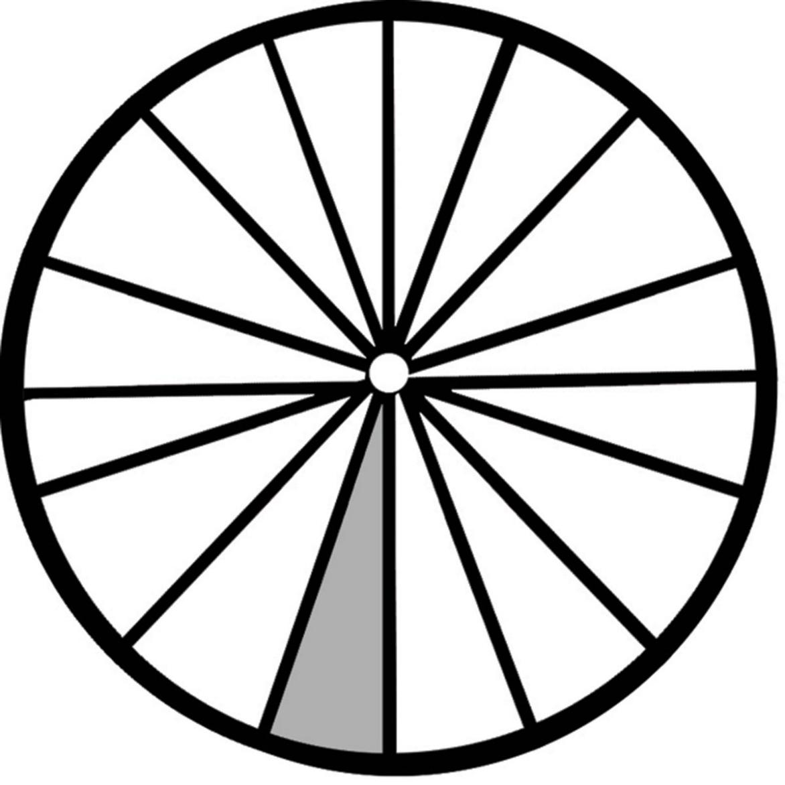
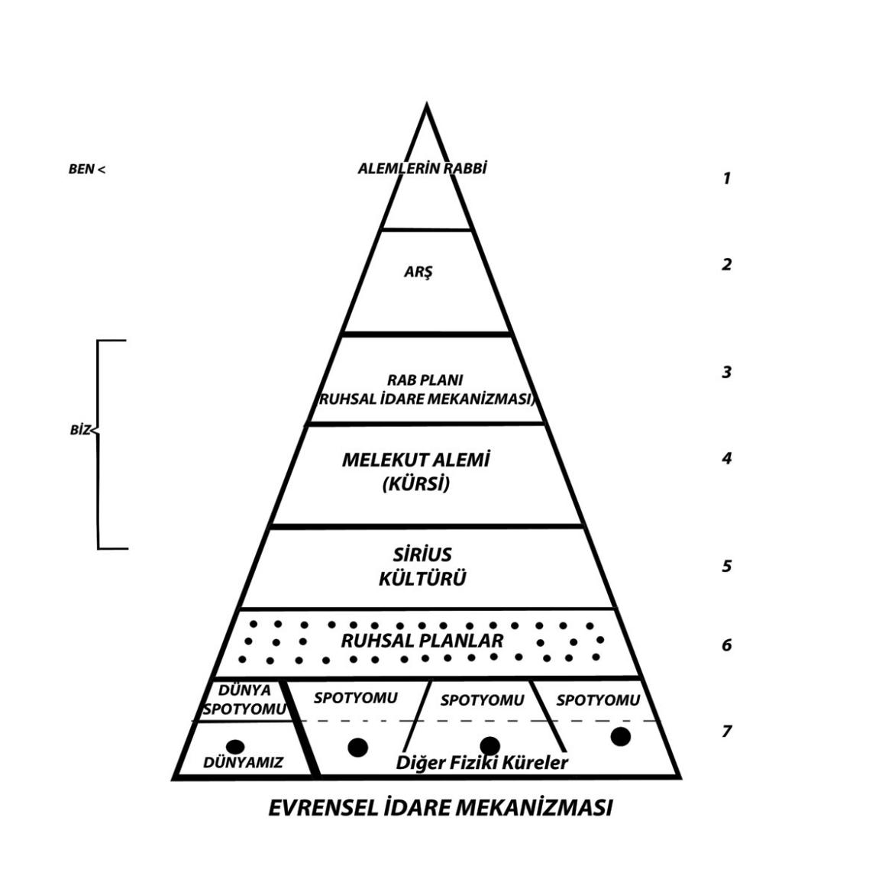
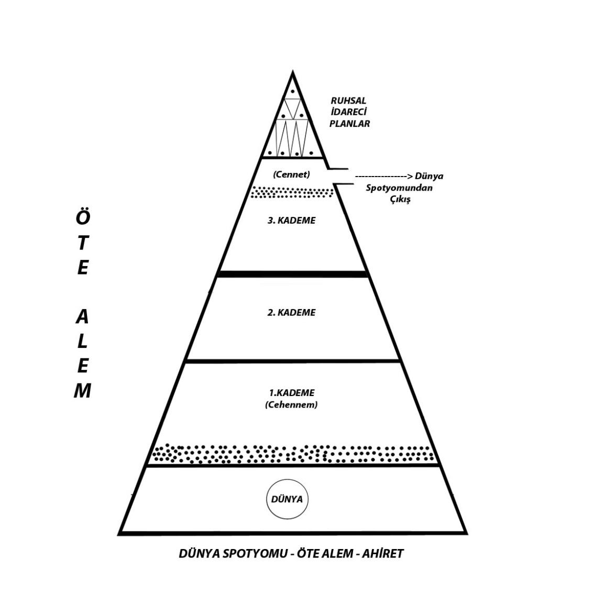

Kur’an-ı Kerim’i okuyanların hemen farkettikleri bir özellik vardır. Kur’an-ı Kerim’in ifade tarzında kullanılan üç farklı zamir bulunmaktadır: “Ben”, “Biz” ve “O...”
İşte birkaç örnek:
“Ey Muhammed, Cebrail sana Kur’an okurken, unutmamak için acele edip onunla beraber söyleme, yalnız dinle. Doğrusu o vahyolunanı kalbine yerleştirmek ve onu sana okutturmak Bize düşer. Biz onu Cebrail’e okuttuğumuz zaman, onun okumasını dinle. Sonra onu açıklamak Bize düşer.” (KIYAMET, 75/16-19)
“Yağmurun dönüşünü sağlayan göğe ve yarılan yeryüzüne andolsun ki, Doğrusu bu Kur’an kesin bir sözdür. O, eğlence için değildir. Gerçekten onlar düzen kuruyorlar. Ben de bir düzen kurmaktayım. Ey Muhammed, Sen inkarcılara mehil ver; onlara mukabeleyi biraz geri bırak.” (TARIK, 86/11-17)
Ey insan... Yüce Rabbi’nin adını tesbih et. O, yaratıp şekil vermiştir. O, her şeyi ölçüyle yapıp doğru yolu göstermiştir. O, yeşillikler bitirmiştir... (A’LÂ, 87/1-4)
Yukarıdaki birkaç örnekte de görülğü gibi, Kur’an-ı Kerim’de üç farklı hitap tarzı bulunmaktadır. Bazen “Ben”, bazen “Biz” ve bazen de “O” diye hitap edilir...
“O”: Birçok ayette “Alemlerin Rabbi olan Allah”ı ifade eder. Bazı ayetlerde ise örneğin Al-i imran Suresi’nin 18. ayetinde olduğu gibi “Kaadir-i Mutlak Yaratan”ı ifade eder. Bu tartışma götürmeyecek kadar açıktır... Burada asıl üzerinde durulması gereken “Ben” ve “Biz” sözcükleridir...
“Biz” sözcüğü sadece son üç büyük dinden sonuncusunun kutsal kitabında varolan bir özelliktir. Ne incil’de, ne de Tevrat’ta “Biz” sözcüğü yoktur... Çünkü onlar, bu anlamda bir tebliğ değildi. Bizzat Musa’nın ve İsa’nın o anki anlatımlarına dayalıdır. Fakat bu sözlerimizden onların ruhsal irtibat ile hiç bir bilgi almadığı anlamı da çıkmamalıdır. Her ikisi de birer büyük inisiye olan bu iki vazifeli de, kuşkusuz ki, “Yukarısı”yla her an irtibat kurabilecek nitelikte kişilerdi... Ancak onlarda, Muhammed Peygamber’de olduğu gibi önceden hazırlanan bir metnin ruhsal tebliğ kanalıyla alınışı söz konusu değildir. Yani medyomik bir irtibatla anlatılacaklar onlara nokta virgül, tebliğ edilmemiştir. Onlar kendi bilgilerini ve ilhamlarını birarada dile getirmişlerdir.
Kaldı ki, İsa Peygamber geçmişini büyük bir ölçüde unutmadan dünyaya geldiği için her şey zaten onun dünyasal şuurunda mevcuttu. Yeni baştan bazı şeyleri ona tebliğ etmeye o anlamda gerek yoktu... Dolayısıyla “Biz” demesine gerek de yoktu... Bu nedenle İsa Peygamber’in anlatımlarında sadece “O”, “Rabb” ve “Baba” sözcüklerine rastlanır.
Buna karşılık, Muhammed Peygamber’in aktaracağı bilgileri unutarak gelmesine de, zaten başında karar verilmişti. Geldikten sonra da O’na bu bilgileri birilerinin aktarması gerekiyordu...
Kısaca toparlamak gerekirse, Kur’an-ı Kerim’de geçen “Biz” zamiri bir çoğulluğun ifadesi olarak karşımıza çıkar. Bu çoğul ifade bazı ayetlerde “Evrensel idare Mekanizması”na bağlı olarak çalışan “Ruhsal idare Mekanizması”nın, bazı ayetlerde dini literatürde “Kürsi” ya da “Melekut” olarak geçen yönetici varlıkların ve bazı ayetlerde ise bizzat “Siriuslu Varlıklar”ın hitabını ifade eder. Görüldüğü gibi Kur’an-ı Kerim’de “Biz” zamirini kullanan çeşitli sistemler vardır.
Buna karşılık, “Ben” zamiri ise sadece “Alemler’in Rabbi Allah”ın ifadeleri olarak karşımıza çıkar.
Görüldüğü gibi Kur’an-ı Kerim’in indirilişinin çeşitli yönleri vardır. Bazen “Alemlerin Rabbi Allah” tarafından, bazen “Ruhsal idare Mekanizması” tarafından, bazen, “Melekut Alemi” tarafından, bazen “Siriuslu Varlıklar” tarafından, bazen de bizzat Cebrail tarafından tebligatta bulunulmuştur. Ancak tamamı belli bir plan doğrultusunda gerçekleştirilmiş bir bütünün parçaları gibidir. İşte Kur’an-ı Kerim’in içinde farklı zamirlerin bulunmasının sebebi budur...
“Ey Muhammed, Kur’an’ı Biz okutacağız ve asla unutmayacaksın. Allah’ın dilediği bundan müstesnadır. Doğrusu açığı da gizliyi de bilen O’dur.” (A’LÂ, 87/6-7)
Bu ayet; şu anda açıklamaya çalıştığımız konumuzla ilgili en önemli ayetlerden biridir... “Allah’ın dilediği bundan müstesnadır” diyerek, kendi aktaracakları ayetlere zaman zaman Allah’ın da müdahalesi olacağı yukarıdaki ayette son derece açık bir şekilde ima edilmektedir. Sevgili okuyucular, eğer Kur’an’ı titiz bir şekilde baştan sona incelerseniz, siz de pekçok sırrı içinde barındıran ve burada aktarmaya çalıştığımız ezoterik bilgilerin birçoğunu üstü kapalı bir şekilde dile getiren ayetlerle karşılaşabilirsiniz... Burada tüm Kur’an’ın bir tefsirini yapma imkanımız olmadığı için şimdilik sizlere sadece birkaç örnek vermekle yetiniyoruz...
Bütün bu anlatılanları daha iyi zihnimizde yerli yerdine oturtabilmemiz için “Evrensel İdare Mekanizması” ile ilgili bazı bilgileri şematik tarzda görmenin bazı kolaylıkları vardır. Yan sayfadeki şekil “Evrensel İşleyiş”in nasıl bir mekanizma tarafından ayakta tutulduğunu göstermesi bakımdan, kabaca da olsa bir fikir verebilir.
Üçgen tarzda çizilen bu şekil aslında bir dairenin sadece küçük bir kesitini oluşturur. Yani bu üçgenler gibi birçok üçgenlerin varolduğunu düşünmek gerekir. Bütün bu üçgenler yan yana getirildiğinde aşağıdaki “daire” şekli oluşur.
Aşağıdaki şekil, varoluşun tamamını sembolize eder. Birçok üçgenden oluşan aşağıdaki dairenin taralı olan kısmı ise, yan sayfadeki üçgeni ifade eder.
Başta Tufan Öncesi Mu ve Atlantis ugarlıkları olmak üzere, eski uygarlıkların çoğunda “daire”, mükemmelliyetin sembolü olarak karşımıza çıkar. Eski Mısır’da “Güneş Tanrısı -Ra” olarak isimlendirilen ve bir “daire” ile gösterilen sembol de yine aynı şeyin ifadesidir. Yani evrenin ve varoluşun sembolüdür...
“Daire”nin antik bilgilerde geometrik şekillerin en mükemmeli olarak nitelendirilmesinin altında yatan gerçekler de yine bu bilgilere dayanır.
Ezoterik bilgilere göre de, dairenin içi yaratılanları, dışı ise yaratanı sembolize eder. Bu tanımlama “Yaratan”ın yaratılmış olanların içinde aranmaması gerektiğine dair çok önemli bir ayrımı ortaya koyar. Oysa ki, konunun inisiyatik ve ezoterik yönüyle meşgul olmayan ve sadece kulaktan dolma dini bilgileri yeterli gören çoğunluk için, “Yaratan” adeta bir varlık gibi telakki edilmiştir...
Evrensel idare Mekanizması ile ilgili genel bir fikre sahip olabilmek için, onu çeşitli unsurlarıyla birlikte ele alarak incelemek gerekir. Yani “Evrensel İdare Mekanizması” hakkında bir bilgi elde edinmek istiyorsak, onun bir üstünü ve bir altını da incelemek gerekir. Çünkü bir şey, kendisinin bir üstü ve bir altı ile karşılaştırılmadan, onlara karşı nisbeti incelenmeden, o şey hakkında bir bilgi elde edemeyiz. Bu kural insan için de geçerlidir... Kendimizi anlamak istiyorsak, hem kendi yeteneklerimizden üstün olanı, hem de aşağıda olanı dikkate alıp, aradaki farkı görmek lazımdır. İçinde bulunduğumuz üç boyutlu alemin bir doğal icabı olarak, biz her hangi bir konu hakkında bilgi sahibi olabilmek için farklı unsurları birbirleriyle karşılaştırmak zorundayızdır. Başka türlü o mesele hakkında bir bilgi edenmemiz mümkün olamamaktadır.
İşte bu nedenle “Evrensel İdarel İdare Mekanizması”nın geneli hakkında bir bilgi edinebilmemiz için, onu oluşturan unsurlarını önce anlamış olmamız gerekir. Şimdi çok kısa ve çok genel hatlarıyla bu unsurları gözden geçirelim... Böylelikle Kur’an-ı Kerim’de niçin göğün yedi kat ifade edildiği de daha iyi anlaşılmış olacaktır:
Alemlerin Rabbi: O’nu farklı dinler, farklı isimlerle insanlara anlatmaya çalışmışlardır... En son olarak da Muhammed Peygamber O’ndan bahsederken, “Allah” ismiyle zikretmiştir... Ancak “Alemlerin Rabbi olan Allah” sözü, Kur’an’da “Kaadir-i Mutlak Yaratan” anlamında kullanmamıştır. Bununla ilgili çok açık ayetler olmasına rağmen, meselenin bu yönü de diğer pekçok meselelerde olduğu gibi hasır altı edilmiştir... İşte onlardan biri:
“Yaratanlar’ın en güzeli olan Allah ne uludur!...” (MÜ’MİNUN, 23/14)
Buradaki “Yaratanlar” sözcüğü dikkatlerinizi hemen çekmiştir sanırım... Yoktan vareden “Kaadir-i Mutlak Yaratan” için, “Yaratanlar” sözcüğü kullanılamayacağına göre, burada sözü edilen “Yaratma” işlemi varolan enerjilerin kullanılmasıyla gerçekleştirilen, fizik alemlerin meydana getirilişidir. Yani yoktan var etme değil, varolandan yeni varedilişlerin gerçekleştirilmesidir. Ve bunu yapanların da tek olmadığı ayette açıkça belirtilmiştir... Daha açık nasıl anlatılabilirdi ki?...
İşte aynı konuyla ilgili bir başka ayet daha:
“Allah, melekler ve adaleti yerine getiren ilim sahipleri, O’ndan başka Tanrı olmadığına şahitlik etmişlerdir. O’ndan başka Tanrı yoktur. O güçlüdür, Hakim’dir.” (AL-İiMRAN 3/18)
O’ndan başka Tanrı olmadığına şahitlik edenlerin arasında Allah’ın da bulunduğu, sanırım dikkatlerinizden kaçmamıştır...
Arş: Kur’an’da “Arş-ı Ala” olarak geçer. En yüce Arş demektir. Bu ifadedeki Arş, sürekli oluş mekanıdır. Arş, kozmik hiyerarşideki en üst mekanizmadır. Her türlü oluşumun kaynağıdır... Ruhsal gelişim seviyeleri bakımından gerçek anlamda “İlahlar”ın mekanıdır diyebiliriz... Fiziksel ve Ruhsal Alemler’in tamamını kapsamına alan bu mekanizma hakkında, neredeyse hiç denebilecek kadar az bilgi vardır.
Ruhsal İdare Mekanizması: “Alemler’in Rabbi” ve “Arş Mekanizması” tarafından şekillendirilen fiziki ve astral alemlerin idareciliğini, görüp ve gözeticiliğini yaparlar. Çeşitli dünyalardaki devreleri tanzim ederler. Bu devreleri önceden belirlerler, uygulamaya sokarlar, yeri geldiğinde uzatırlar ya da kısaltırlar ve sonunda kapatırlar. Varlıkların gelişimleri ile ilgili her türlü plan ve program bu yönetici mekanizmanın üyeleri tarafından gerçekleştirilir.
Kendi Dünyamız için bir örnek vermek gerikirse, bugüne kadar dünyamıza gelen tüm vazifeli varlıkların seçimleri bu mekanizma tarafından gerçekleştirilmiştir. Tüm dinlerin sahipleri yine bu mekanizmanın üyeleridir. Bu devremizin belli bir noktasında meydana gelecek olan “kıyamet” de yine “Ruhsal idare Mekanizması”nın tasarrufu altındadır.
“Ruhsal idare Mekanizması” için her uygarlık ve her din farklı isimler kullanmışlardır. Örneğin Hristiyanlıktaki “Ruhül Kudüs” ve İslamiyet’teki “Yüce Kalem” Ruhsal idare Mekanizması’nı ifade eden tanımlamalardır. Yine Kur’an dilinde geçen “Zıllullah” tabiri de “Allah’ın Gölgesi” anlamına gelir ve Ruhsal idare Mekanizması’nı ifade eden sembollerden bir diğeridir.
Melekut: Dini literatürde “Kürsi” olarak da isimlendirilen bu bölge, Alemlerin Rabbi, Arş ve Ruhsal idare Mekanizması’ndan gelen tesirlerin, vibrasyonlarının düşürüldüğü bir bölgedir. Eğer böylesine bir mekanizma olmuş olmasaydı. “Yukarısı”nın aşağısıyla irtibatı hiç bir şekilde mümkün olamazdı. Bu bölge adeta bir transformatör gibi iş görür. Meselenin bu yönü Tevrat’ta hikayeleştirilerek Musa peygamber’in başından geçen bir olay olarak anlatılmıştır. Hatırlanacağı üzere bir gün Musa Peygamber: “Ya Rabbi... Seni görmek istiyorum, bana yüzünü göster...” demiştir. Aslında bu sözler, Musa Peygamber’in Allah’a olan büyük sevgisini, ona olan düşkünlüğünü ve bağlılığını belirtmek için söylenmemiştir. Bu, bir bilginin ortaya çıkması için bir diyalogdur. Yani bir bilgi aktarma tekniğidir.
Burada Musa Peygamber’e gelen cevap önemlidir: “Sen beni göremezsin, buna dayanamazsın...” denmiştir. Bunu diyen kuşkusuz ki, Alemler’in Rabbi değildir. Eğer o söylemiş olsaydı neler olacağı bellidir. Bu da söylenmiştir. Dağlar’ın yanması bunun cevabıdır... Yani o tesir, kelam zarfına büründürülmeden dirket olarak gelirse neler olacağı sembolik olarak anlatılmıştır.
Alemler’in Rabbi’nin ve Ruhsal idare Mekanizması’nın tesirlerinin insanlara zarar vermeden nakledebilmesi için fonksiyon gören bu mekanizma, Kur’an-ı Kerim’in Muhammed Peygamber’e tebliğ edilmesinde de fonksiyon görmüştür. Bu fonksiyonu gören ve Melekut alemine ait varlıklardan birisi de Cebrail’dir...
Kur’an’da Melekut Alemi’ne dahil olan ve her biri farklı görevler üstlenen dört büyük “melekten” söz edilir: “İsrafil”, “Cebrail”, “Mikail” ve “Azrail...” Bunlar bizim bildiklerimizdir; yoksa Melekut Alemi sadece bu dört varlıktan ibaret değildir... Ve hemen şunu da hatırlatalım; bu bölgenin adı “Melekut Alemi” olarak isimlendirilmiş olmasından dolayı burada bulunan varlıklara da “melek” ismi verilmiştir. Yoksa daha önce de söylemiş olduğumuz gibi, “Melekut Alemi” öyle oraya buraya uçuşan kanatlı varlıkların bulunduğu masalımsı bir sistem değildir. Bu yanlış anlamayı da burada düzeltelim... Ve onların da birer “Ruh” varlığı olduklarını hatırlatalım...
Bu taransforme etme, yani enerjinin şiddetini düşürme ameliyesini, son devre içerisinde, “Melekut Alemi”nin katkıları olmaksızın, sadece İsa Peygamber bedenli yaşamı içerisinde gerçekleştirebilmiştir. Bunu gerçekleştirebilmesi için de zaten kendisi için özel bir beden oluşturulmuştu... Hatırlanacağı üzere, doğumu da normal yollarla gerçekleşmemiştir... Kendisi de zaten “Melekut Alemi”ne ait varlıklardan biridir... Böyle bir tecrübe bir numune olarak bizim devremizde sadece bir kez gerçekleştirilmiştir. Kendisini açıkça “oğul” olarak tanıtmasının altında yatan gerçeklerden biri de işte budur. Ancak ne var ki, bu hiç bir zaman anlaşılmamıştır. Bilenler de 2000 yıldır susmuşlardır...
Sirius: Bize oranla son derece süptil maddelerden olsa da yine de fizik bedenlere sahip varlıklardır.
Dünyamız gibi başka dünyalardaki varlıkların da gelişimleriyle yakından ilgilenen bu kozmik - uzaysal varlıklar, için Ruhsal idare Mekanizması’nın eli - ayağıdır diyebiliriz... Gerçekten de onların elleri ve ayakları gibi çalışırlar. Çok nadir olarak Dünyaya kendi aralarından vazifeli varlıklarını gönderdikleri ve Gizli yeraltı uygarlığı “Agarta” ile direkt temaslarının bulunduğu bilinmektedir.
Ezoterik bilgilerde bu varlıkların ışıktan bedenlere sahip olduklarının ifade edilmesi, bedenlerinin ne denli süptil (yüksek titreşimli) maddelerden oluştuğunu anlatmak içindir. Vibrasyonlarını düşürmeden dünyamıza gelseler ve bizim karşımıza çıksalar, bizim onları görmemiz mümkün olamaz. Ancak vibrasyolarını düşürdükleri takdirde onları büyük bir ışık olarak algılayabiliriz. İyice düşürdükleri takdirde, onların belirledikleri bir form içinde onları görmemiz ancak mümkün olabilir. Bu özellik, başka uzaylılar için de geçerlidir. Nitekim birçok mitolojik ve dinsel metinlerde geçen ışıklar içinde gökyüzünden gelenler işte bu tür uzaysal kökene sahip varlıklardır. [18]
Ruhsal Planlar: “Ruhsal idare Mekanizması”nın bize en yakın kısmıdır. Gelişim düzeyleri ve potansiyelleri bakımından bizlerden bir hayli ileri seviyede bulunan bedensiz varlıkların teşkil ettiği bir organizasyonlar bütünüdür. Potansiyelleri ve gelişmişlik düzeyleri farklı seviyelerdeki planların oluşturduğu büyük bir organizasyondur. Her bir plan, bu organizasyon içinde hiyerarşik bir yapılanma içinde vazife görmektedir.
Zaman zaman ileri düzeyde medyomlara ruhsal tebliğler vererek insanları belirli bir düzeyde eğitirler. İnsanlarla çok yakından ilgilenirler. Yine zaman zaman insanların içlerinde hissettikleri yüksek seviyeli ilhamlar, çoğunlukla bu planlar tarafından gönderilir.
Dünyamızın sadece fiziki kısmıyla değil aynı zamanda astral kısmı ile yani spatyomu ile de yakından ilgilenirler.
İnsanların doğmadan önceki hayat planlarının öte alemde hazırlanmasında ve daha sonra dünyada bu planların gerçekleştirilmesinde, bu organizasyonun çok önemli bir fonksiyonu vardır. Metapsişik çalışmalarda sözü edilen “bedensiz hami varlıklar” ya da “rehber varlıklar” bu ruhsal planlara ait olan varlıklardır.
Bütün bu anlatmaya çalıştıklarımızı şöyle bir toparlayacak olursak; Evrenimiz’de bulunan tüm varlıkların bir hiyerarşi içerisinde bulunduklarını söyleyebiliriz. Ve her varlık bu büyük hiyerarşi içerisinde vazifesini yerine getirmektedir. Bazen bilerek ve şuurlu olarak bazen de biz Dünya insanlığı gibi bilmeden ve otomatik bir şekilde...
3– Ahiret Hayatı, Cennet - Cehennem:
Kur’an-ı Kerim, Dünya spatyomundan “ahiret” olarak bahseder. Öldükten sonra varlıkların astral bedenleriyle gittikleri bir mekandır. Dünyamız’ın fizik maddesine oranla çok daha süptil maddelerden oluşan bu mekanda düşüncelerimizin anında şekillendiği, Kur’an’da “ne dilerseniz orada anında karşınıza çıkacaktır “diye üstü örtülü bir şekilde anlatılmıştır.
Öldükten sonra spatyomda kendi gelişmişlik seviyemizle doğru orantılı bir yer ediniriz. Spatyom, aşağıdan yukarıya doğru gittikçe süptilleşen maddelerden oluşur. Bu nedenle spatyomun ne kadar yükseklerinde bir yer edinebileceğimizi belirleyen tek unsur astral bedenimizin yapısıdır. Dünyada yaşarken astral bedenimizi ne kadar yüksek titreşimli bir hale getirebildiysek, “spatyom”da da o kadar yüksek imkanlı bölgelerde kendimize bir yer edinebiliriz... Astral Bedenimizi kabalaştıran en önemli etken ise, yaşarken ürettiğimiz kaba düşüncelerdir. Bu nedenle “düşüncelerinizden de sorumlusunuz” denmiş ve yine bu yüzden tüm dinlerde insanları “pozitif düşüncelere” yöneltmek için aşırı bir çaba harcanmıştır. “Dünya Spatyomu”ndan çıkarak daha ileri seviyeli mekanlara doğmamız ancak astral bedenimizin süptilleştirilmesiyle mümkün olabilecek bir meseledir. Aksi takdirde dünya spatyomunun üst kademelerine tırmanabilmemiz hiç bir zaman mümkün olamayacaktır.
Tüm dinler “Dünya Spatyomu”ndan çıkışı ya da hiç değilse üstlere tırmanışı bir kurtuluş noktası olarak nitelendirmişler ve bunu da çeşitli isimlerle sembolleştirmişlerdir. Budizm’de “Nirvana”, Hristiyanlıkta “Gökler’in Melekutu”na giriş, İslamiyet’te ise “Cennet” işte bunu anlatır... Spatyomun en aşağı seviyeleri ise son derece kaba enerjilerle haşır neşir olan geri seviyeli varlıkların yoğunlukla bulunduğu cehennemi andıran bölgelerdir... Bu yüzden de İslamiyet’te bu bölgeleri ifade etmek maksadıyla cehennem tabiri kullanılmıştır. Bu tabir hemen hemen tüm dinlerde vardır... Spatyom’un bu bölgesi varlıkların öldüklerini bile anlamadan geçirdikleri sıkıntılı ve ıstıraplı bir aşamasıdır. Bu bölgede varlıklar çoğunlukla kendi düşüncelerinden dolayı oluşmuş imajların içinde bocalayıp durmakta ve bu imajların kendi düşüncelerinin sonucu oluştuğunu bir türlü anlayamamaktadırlar.
İçinde bilgisi olmayan inançların, insana hiç bir yarar sağlamayacağı artık net bir şekilde bilinmesi gerekir. Sadece Hristiyanlığı ya da Müslümanlığı kabul etmiş olmak, insana ahiret hayatında hiç bir ayrıcalık sağlamamaktadır.
Örneğin, eğer Kur’an-ı Kerim’de sözü edilen “Cennet” ve “Cehennem” meselesi birebir anlatıldığı şekliyle ele alınacak olursa, öldükten sonra büyük bir sürprizle karşılaşmamız kaçınılmaz olacaktır. Bu nedenle Kur’an’da geçen “Cennet” ve “Cehennem” tasvirlerinin birer sembol oldukları hiç bir zaman unutulmamalıdır. Aksi takdirde kendi yarattığınız imajların sonucunda; kendinizi alevler arasında yanıyor görebilir ya da altından ırmaklar akan çimenler üzerinde yan gelip yatıyor bulabilirsiniz. Öte Alem hakkında yanlış imajlarla ölen bir kimseyi orada hayli sıkıntılı anların beklediğini hatırlatarak bu konuyu burada noktalayalım. [19]
4– Kıyamet: Dünya üzerinde yaşayan milyarlarca insan, görünürde farklı inançlarıyla; farklı renkteki yollar üzerinde yürüyerek, bilemedikleri bir hedefe doğru gitmektedirler. Ancak, bu hedefin ne olduğu bellidir...
Ezoterik bilgiler bu hedefi, “İnsanlığın aşamalı aşağıya inişi ve sonra tekrar çıkışı” ile sembolleştirerek insanlara söylemişlerdir. Dinler ise bu hedefi, “kıyamet” sembolüyle şifrelendirdikten sonra insanlara aktarmışlardır. Bu nedenle tüm dinlerde “kıyamet” bir son nokta olarak insanların önüne konulmuştur. Hemen hemen her dinde bu sembol kullanılmıştır. Bu hedef için uğraşılmış ve insanlık bu hedefe doğru yönlendirilmiştir... Hem de binlerce yıldır...
“Kıyamet” en önemli dinsel sembollerin başında gelir. Ne var ki, bu en temel sembollerden biri olan “kıyamet sembolü” hakkında da son derece yanlış yorumlar yapılmıştır.
Sadece Müslüman olmayı “kurtuluş” için yeterli zanneden ve hiç bir araştırmayı gerekli görmeyen, sıradan dindarlar için kıyamet; gökten taşların yağacağı, garip varlıkların ortaya çıkacağı, fırtınaların yeryüzünü birbirine katıp göz gözü görmeyeceği, tufan halinde yağmurların yağmaya başlayacağı, sellerin afetlerin ardı arkası kesilmeyeceği günler olarak ele alınmaktadır.
Bu yorum insanları korkutmaktan başka bir işe yaramamıştır. Sadece: “Kıyamet kopunca dünya yerle bir olacak, o halde biz kendimizi kurtarmak için Allah’a dua edelim, O’na sığınalım ve yalvaralım, ibadetlerimizi zamanında yerine getirelim ki bu dualarımız kabul olsun” tarzında insanları bir inanca götürmüştür. Bunun haricinde, başka bir işe yaramamıştır.
Bir takım kozmik olaylar da olsa, bir takım astronomik değişiklikler de meydana gelse, bunlar insan varlığına ne gibi etkide bulunabilirler?... Yani bunca zaman bir adım dahi ilerlememiş bir insan, kafasına gökten bir kaya parçası düşse ne yapar? Hangi bilgiyi ve inancı kazanabilir? Herhangi bir değişime, bir transformasyona uğrayabilir mi? Hiç bir şey olmaz... Kafasına o kayayı yediğiyle kalır... Sadece korkar... Ödü patlar ya da şoktan ölür... Belki de kaçar... Fakat her ne olursa olsun, kendi varlığında bir değişiklik olma imkanı sağlamaz...
Böyle bir yanlış anlayışın ortaya çıkamasının tek sebebi, “Kutsal Kitaplar”ın sembolik bir dille yazdırıldığı gerçeğinin göz ardı edilmesidir... Böyle olunca da “Tufan” ile “Kıyamet” sembolleri birbirine karıştırılmıştır... Yukarıda tasvir edilen olaylar “Kıyamet”İ değil, “Tufan”ı anlatır. Ve Dünya zaten böyle bir “Tufan”ı bunda önce geçirmiştir... Bundan sonra da geçirecektir ancak insanı asıl ilgilendirmesi gereken “Tufan” değil “Kıyamet”tir. Çünkü “Tufan” dünya ile ilgili bir meseledir, “Kıyamat” ise insanla alakalı bir fenomendir... Kuşkusuz ki, Dünya üzerinde yaşayan insanların da “Tufan”dan fiziki olarak etkilenmesi söz konusudur, ancak bu etkileşim onların ruhsal gelişimleriyle alakalı bir mesele değildir.
“Tufan” meselesi günümüz bilimadamlarınca gayet net bir şekilde takip edilmektedir, örneğin Birleşmiş Milletler İPCC (Klimatik Değişimler Üzerine Çalışma Grubu) kuruluşundan geçtiğimiz yıllarda gelen bir rapor; Dünya’nın hızla bir Tufan’a doğru sürüklendiğine dikkatleri çekmekteydi. 60 ülkeden 1500 bilimadamının çalıştığı Birleşmiş Milletler’in iPCC kuruluşundan gelen raporda; Dünya ısısının hızla arttığı ve bunun sonucu olarak da buzulların erimeye başladığı bildirilirken, 2100 yılına kadar deniz seviyesinin 1 m yükseleceği ifade edilmekteydi. Raporda yer alan bir başka uyarı da, söz konusu ısınmayla birlikte bazı bölgelerde büyük kuraklıkların ve büyük kasırgaların, hortumların baş göstereceği yönündeydi. Bu rapor elimize geçer geçmiz 6 KASIM1996 tarihinde, Posta Gazetesi bünyesinde çıkarttığmız haftalık gazete eki “Gizemler Dünyası”nda yayınlamıştık... Çünkü bu rapor, bir zamanlar Dünyamız’ın geçirdiği Tufan’a benzer bir başka Tufan’ın, hızla yaklaşmakta olduğunu gösteriyordu...
Çok değil... Tam 3 yıl sonra Eylül 1999 tarihinde basında yer alan bir başka haberde, Kutuplardan kopan dev bir buzulun hızla aşağılara doğru hareket ettiği bildiriliyordu. Evet, Dünyamız hızla ısınmaya devam ediyor... Bu ısınmanın, 2000’li yıllarda Dünyamız için çok ciddi bir sorun yaratacağı ortada... Nitekim ilk belirtileri ortaya çıkmaya başlamış durumda...
Ancak bu olayların tarihi çok yakın değildir... En azından sorunun üst boyutlara ulaşması için 100 yıllık bir süre var... Tarihi yakın olan “Tufan” değil, “Kıyamet”tir...
Peki o halde “Kıyamet” nedir?... Bunu açmaya çalışalım...
“Kıyam etmek”: “Ayağa kalkmak anlamına gelir...”
İnsanların uyumakta olduğu yani, dünya üzerinde kapalı bir şuurla ve birçok bilgiden habersiz olarak yaşadıkları hemen her dinde, felsefede, inisiyatik öğretilerde, ezoterizmde dile getirilmiş bir meseledir. Meselenin bu yönü, bizzat Muhammed Peygamber tarafından da bir hadisinde iki kelimeyle özetlenmiştir: “İnsanlar Uyumaktadır...”
“Kıyamet”te insanların ayağa kalkacağından sözedilmesi şuurlanarak bilgilenecekleri anlamında kullanılmıştır. Yoksa ölülerin cesetlerin ve kemiklerin dirilmesi anlamında değil...
İnsanlık “kıyam” edecektir... Yani Türkçe anlamıyla tercüme edersek ayağa kalkacaktır... Ayağa kalkma sembolünü de açacak olursak, insanın şuurlanacağı gerçeğiyle karşılaşırız.
“Kıyamet”: Sırların ortaya çıkacağı ve bu açık bilgilerle insanların topyekün şuurlanma yoluna girecekleri günlerin adıdır.
Evet insanlık hala büyük bir oranda şuursuzdur... Çünkü bilgilerinin büyük bir bölümü zanlarla ve çözülememiş sembollerin dış anlamlarıyla örülüdür. Bu sembollerin çözüleceği günlerin adıdır “kıyamet”... Ve çok yakındır...
Kur’an-ı Kerim’deki Kıyamet Sembolleri:
Kur’an-ı Kerim “Kıyamet”İn ön belirtileri olarak bazı ipuçları vermiştir. Ancak bu belirtiler de kuşkusuz ki, sembollere büründürülerek aktarılmıştır. Şimdi “Kıyamet”İn bu ön belirtilerinin neler olduğunu görelim:
I- Yecüc ve Mecüc’ün ortayı çıkışı,
II- Debbet-ül Arz’ın ortaya çıkışı,
III- Deccal’in ortaya çıkışı,
IV- Güneş’in batıdan doğması...
Bunlar gayet kapalı sembollerdir. Anlaşılabilmeleri için zengin bir ezoterik kültüre sahip olmak gerekir. Son derece kapalı olmaları gelecekle ilgili gizli anlamlar taşımalarından kaynaklanır. Belli ki uzun bir süre herkes tarafından anlaşılmaları istenmemiştir...
Sırasıyla ele alalım...
I– “Yecüc” ve “Mecüc”ün Yeryüzü’nde Ortaya Çıkışı:
Yecüc ve Mecüc sözcüklerinin kelime olarak ne anlama geldiği bilinmemektedir. Tamamen yanlış bir yorum olarak cüce ırk anlamına geldiği kesinlikle doğru değildir... Ufak tefek adamların ortaya çıkıp dünyaya zarar verecekleriyle ilgili yorumlar gerçekle hiç bir alakası yoktur.
Bu masalımsı yorumdan hareket ederek, kendini bilmez, idraksiz bir takım yorumcular ise, maddesel olanın dışında başka bir şey tasavvur edebilecek güçte olmadıkları için, “Yecüc” ve “Mecüc” olsa olsa nüfusu aşırı derece kalabalık olan ufak tefek Çinliler olabilir, dünyayı olsa olsa bunlar istila ederler şeklinde, tamamen şekli ve asılsız izahlarda bulunmuşlardır.
Kur’an’da Yecüc ve Mecüc’den şöyle bahsedilmiştir:
“Ye’cûc ve Me’cûc’un seddi yıkıldığı zaman her dere ve tepeden boşanırlar. Gerçek vaad yaklaştığında inkar edenlerin gözleri beliriverir: ‘Vah bize! Bundan önce gaflet içindeydik, hem de zalimdik’ derler.” (ENBİYA, 21/96-97)
Biz gelelim konun ezoterik açıklamasına:
“Yecüc” ve “Mecüc”, nefsani azgınlığın Kur’an’daki sembolüdür. Daha öztürkçe söylemek gerekirse insanlığın egoistçe duygu ve düşüncelerle kendisini zincirlemesidir. Gözü bu hırslarından başka bir şey görememesidir. Ve bu haliyle dünyamız “Yecüc” ve “Mecücler”e uzun bir süredir teslim olmuş durumdadır. Bir takım ecüş bücüş insanların çıkıp da dünyayı işgal etmesini bekleyenler daha çok bekleyeceklerdir... Çünkü sözü edilen kehanet gerekleşmiştir...
Bu özellikle uyku halinden, genel uyanma arifesinde ortaya çıkan karakteristik bir haldir. Otomatizmadan kurtulmak üzere olan, uyuyan insanların şuuraltlarında içten içe hissettikleri kendi ruhsal büyüklükleri, ilk başta bu şekilde yani egoizm zarfına bürünerek ortaya çıkar. Bu da yoğun bir negatif enerji yayılımına sebebiyet verir. Yani insanların, şuuraltlarındaki bir bilginin, yanlış yorumu ile karşı karşıya bulunulduğu bir dönemdir. İnsan kendi kökenini içten içe farkederken, kendisinin hiç de zannettiği gibi zayıf bir varlık olmadığını, tam tersine tanrısal nitelikte bir varlık olduğunu şuursuzca ve otomatizmanın çarkalarından kurtulamadan farkettiğinde, bunu yanlış bir yorumla egoist olma tarzında dışarıya vurabilir. İşte şu anda yaşanan budur... Kendi ruhsal kudretini içten içe hisseden ancak bilgisi olmadığı için bunu adlandıramayan ve bunu doğru yönlendiremeyen insanların içinde bulundukları bir sürecin yaşanmasıdır.
Tek bir cümleyle özetleyecek olursak: “Yecüc” ve “Mecüc”ün ortaya çıkması, egosal isteklerin azması anlamında kullanılmıştır diyebiliriz.
Bu gibi hallerde, “vesvese” denen sistematik şüphecilik yaygınlaşır. Ki, bu da Kur’an’da dile getirilmiştir. Vesvese her şeyin değerini aşağılamak, küçültmek, düşürmek anlamına gelir. Vesvese insanın içini kemiren bir kurt gibidir. Sonunda insanı tam anlamıyla büyük bir boşluğa götürür. Hiç bir şeyin değeri kalmaz. Sonunda insanı büyük bir ruhi çöküntü içine sürükleyebilir. Nitekim günümüzde psikolojik rahatsızlıkların hızla yükselme göstermesi bunun en açık göstergesidir. İnsan kendisini büyük bir boşlukta hissetmektedir çünkü aradığı cevapları bir türlü bulamamaktadır. Kendisine yapılan dinsel yorumlar da ona yeterli gelmemektedir. Böylelikle ortaya çıkan kısır döngünün sonucunda yaratılan girdap hızla kendisini aşağılara doğru çekmektedir.
Bu kısır döngüden kurtuluşun nasıl olacağı da Kur’an’da bir sembolle anlatılmıştır. Dört büyük melekten biri olan “İsrafil”İn üfleyeceği boru ile “Kıyamet” denilen “büyük uyanış devri” başlayacak ve bu gidişat sona erecektir.
İsrafil’in üfleyeceği borunun ezoterik anlamı ise, “Melekut Alemi”nin kozmik tesirleridir. Anlayışı arttırıcı ve insanı şuur uyanıklığına götürücü bu tesirlerin insanlara yollanmasıyla birlikte bir değişimin meydana geleceği anlatılmak istenmiştir. Böylelikle insanın kendi egoizmasını, duygusallığını yenerek kendisine tam hakim olabilmeyi başarabilecektir. Bunun da ne kadar zor bir iş olduğu bilindiği için, tüm “Kıyamet” tasvirleri büyük zorluklar ve ıstıraplı haller içinde anlatılmıştır. Şuur uyanıklığına geçebilmenin, değişmez ilk şartı “nefsin ıslah” edilmesidir... Böylelikle insanın kendisini uyuşuk halde tutan, kendisini bağlayan her türlü yozlaştırıcı etkiden sıyrılabilmesi mümkün olacaktır... Aslında bu tür bir değişim yani insanların uyanması, şu anda da istenmektedir... Ve uyananlar vardır. Fakat belli bir süreye kadar bu uyanıklığı sağlayamayanlar belli bir süre sonra topyekün uyandırılmaya tabi tutulacaklardır. İşte “Kıyamet”te gerçekleştirilecek olan şey budur...
II- Debbet-ül Arz’ın Ortaya Çıkışı:
“Debbet-ül Arz” Arapça bir tamlamadır. “Dabbe”: Hayvan veya binek hayvanı anlamına gelir. “Debbet-ül Arz” ise, kıyamet vakti yaklaşınca yerden çıkacak olan “korkunç bir hayvan” anlamında kullanılmıştır.
Adeta canavarı andıran bu hayvan, tüm mitolojilerde ve ezoterik bilgilerde, astral bedenimizi adeta bir zırh gibi saran “tortunun” sembolüdür... Nitekim mitolojilerde bu tortu ağzından alevler saçan “canacar” ile sembolleştirilmiştir. Mitolojilerdeki canavarla mücadele motifleri ise, bu tortunun inisiyatik çalışmalarda temizlenmesinin mecazi anlatımıdır. Sadece mitolojilerde değil, eski uygarlıkların dinsel metinlerinde de aynı sembol ile karşılaşırız.
Ruhsal özümüzden gelen tesirlerin bize kadar ulaşmasına engel olan bu tortunun temizlenmesi, insan yaşamının asıl gayesidir. Ancak ne var ki, çoğunlukla bu tortuyu temizlemek bir kenara, tam tersine daha da artırarak bu dünyadan ayrılırız. Astral bedenimizin çevresini kaplayan bu tortunun oluşmasına sebebiyet veren en önemli etken; gerek bizden, gerekse çevremizden bize gelen negatif düşünce enerjileridir. Bu konuya az önce değinmiştik. İşte burada söz konusu edilen “canavar” bunun sembolüdür...
Astralimize ağırlık teşkil ederek, gerek ruhsal enerjilerimizin tam olarak bünyemize gelmesine, gerekse de “Yukarısı”nın tesirlerini tam olarak hissetmemize engel olan bu tortunun temizlenmesi, tam anlamıyla bir canavarla mücadele etmek kadar zordur. Çünkü bu tortu yüzünden insancıl yönümüz değil, hayvansal içgüdülerimiz daha ön plana çıkmaktadır.
Yine bu tortu yüzünden bizler yukarısının tesirlerini algılayamamaktayız demiştik... Eğer bu tortu olmasaydı, bizler Yukarısı’nın varlığını ve “Ruhsal Otorite”yi çok daha kolay idrak edebilirdik. Günlük yaşamımız içinde dilimizden “İnşallahlar”, “Maşallahlar” hiç düşmez ama gerçek bir “Ruhsal Otorite”nin hangi yasalarla bizi çevirip kuşattığından hemen hemen hiç haberimiz bile yoktur... Bu sözcükleri çoğunlukla şuursuzca kullanırız.
Neyse biz gelelim “Debbet-ül Arz”a...
“Debbet-ül Arz” sembolünü tekrar ele alacak olursak şunları söyleyebiliriz: Kıyamet’in yani “genel uyanış”ın başlayacağı günlere yaklaşıldığında, yavaş yavaş insanlar kendilerindeki bu tortunun farkına vararak, bu tortunun temizlenmesi için bir çaba içine gireceklerdir. Daha önce böyle bir çaba içine girememişlerdir çünkü bu tortuyu daha önce görmemişler ve farketmemişlerdir. Demek ki, bu tortu kıyamete doğru insanlar tarafından daha kolay farkedilmeye başlanacaktır...
Günümüzde Debbetül Arz’ı farketmeye başlayan insanların sayısındaki artışı göz önüne aldığımızda, bu kıyamet alametinin de ortaya çıkmakta olduğunu rahatlıkla söyleyebiliriz. Hatta, Kıyamet’in şuurlandırıcı tesirlerini şimdiden farketmeye başlayanlar ise, bu mücadeleye çoktan girmeye başladılar bile... Bunu farkedemeyenlerin ise, “genel kıyameti” beklemekten başka çareleri yok gibi görünüyor...
III- Deccal’in Ortaya Çıkışı:
Kıyamet alametlerinden biri de “Deccal”İn ortaya çıkışıdır. “Deccal”: Aldatıcı demektir...
Genel tasavvura göre kıyamet yaklaştığında; solunda cennet, sağında cehennem ve iki kaşı arasında kafir yazılı Deccal adlı bir varlığın çıkacağından sözedilir. Deccal’in aldatıcılığı daha bu ilk tanımlamada bile kendisini gösterir. Çünkü İslamiyet’te Cennet sağda sembolize edilmiş olmasına karşılık, Deccalin cenneti soldadır. Çünkü onun görevi insanları aldatmak, kandırmak ve böylelikle gerçeğin üstünü örtmektir. Nitekim Deccal’in alnındaki kafir yazısı da bunun sembolüdür. Çünkü Kafir sözcüğü “küfür”den gelir... Küfür: Gerçeğin üzerini örtmek demektir... Kafirler demek “küfür içinde olanlar” demektir. Yoksa sanıldığının aksine, başka dinden olanlar anlamına gelmez. Kur’an’da da böyle geçmesine rağmen, bizde genellikle başka dinden olanlar anlamına çevrilerek kullanılmaktadır.
“Deccal”İn insanları yanılgıya sevketmek için “kıyamet” yaklaştığında tüm dünyayı dolaştığı söylenir. Demek ki tüm dünyayı saran bir tesir alanıdır bu... Ve bu tesir alanı hali hazırda tüm dünyayı etkisi altına almış durumdadır. “Deccal Devri” tüm etkisiyle günümüzde sürmektedir.
Bunun sonucu olarak da, günümüzde insanlar bilgiden uzaklaşmışlar ve gerçeğin açık yüzüyle karşı karşıya gelememektedirler. Bu özellikle dini alanda da kendisini göstermiş ve insanlara sunulan dinle, “dinin gerçeği” arasında büyük bir uçurum oluşmuştur. Hatta öyle bir noktaya gelinmiştir ki, dinin gerçeğini dile getirmeye çalışanlar kafirlikle suçlanır olmuştur. Yani “Deccaller” görevlerini gayet iyi yapmaktadırlar...
Konuyu toparlayalım...
“İsa Peygamber ahir zamanda, şam’ın kuzeyindeki Türk mimari eseri olan beyaz bir minareye inecek ve o minareden ezan okuyacaktır...”
Bu kehanet midir? Yoksa sembolik bir bilgi midir? islami inanç sistemine nasıl girdiği bilinmemekle birlikte bunun üzerinde çok farklı yorumlar yapılmıştır. Hemen şunu söyleyelim ki, bu inançla, Deccal inancı birbirine bağlanmıştır. Çünkü “Deccal”İn, beyaz bir caminin minaresinden inecek olan İsa Peygamber’in süngüsüyle öldürüleceği ifade edilir...
İsa Peygamber’in “Melekut Alemi”ne ait bir varlık olduğundan daha önce bahsetmiştik. Demek ki, “Deccal” olarak sembolleştirilen bu negatif tesir alanı, “Kıyamet”te Melekut Alemi’nin etkisi ve pozitif tesiriyle ortadan kaldırılacak ve böylelikle şuurlanmanın yolları açılacaktır.
Kur’an-ı Kerim’de geçmemesine rağmen, kıyamet alametleri olarak ileri sürülen ön belirtilerden bir diğeri de “Mehdi”nin ortaya çıkmasıdır... “Mehdi”: Kurtarıcı demektir... Ancak “Mehdi” vaadedilen bir varlık değildir... Kurtarıcı herkesin kendi içinden çıkacaktır... Dışarıdan bir kurtarıcının beklenmesine bu nedenle gerek yoktur. Çünkü bu anlamda bir kurtarıcı ortaya çıkıp da insanları kurtaracak değildir. İnsan, önüne getirilen “açık bilgiyle”, önce kendi içindeki Tanrısını keşfedecek yani kendi ruhsal potansiyalinin farkına varacak ve böylelikle herkes kendi kendisinin kurtarıcısı ve mehdisi olacaktır. Kaldı ki, “kıyamet”te kimsenin kimseye şefaat edemeyeceği Kur’an-ı Kerim’de açıkça belirtilmiş olduğu unutulmamalıdır:
“Kimsenin kimseden faydalanamayacağı, kimseden bir şefaat kabul edilmeyeceği, kimseden fidye ayınmayacağı ve yardım görülmeyeceği günden korunun.” (BAKARA, 2/48)
Önemli olan insanların doğruyu eğriden ayırtedebileceği sembolik olmayan açık ve net bilgilerle karşılaşabilmesidir. Bu henüz gerçekleşmedi... Ancak çok az sayıdaki kişinin bildiği bir ezoterik bilgiye göre; böyle bir bilgi mevcuttur. Önceden dünyaya indirilmiş ve şu anda açılacağı günü beklemektedir. Bundan daha önceki sayfalarımızda kısmen söz etmiştik...
Bu bilgilerin açılmasıyla birlikte, “İsa Peygamber’in bir Türk mimarisine sahip beyaz bir minareden ineceğinin” ne anlama geldiği daha açık seçik anlaşılacaktır. Bu bilgilerle söz konusu kehanet arasında bir bağ bulunmaktadır. Şimdilik bu konuyla ilgili daha fazla bir açıklama yapma selahiyetimiz bulunmadığı için, bundan sonrasını, o bilgileri muhafaza edenlerin insiyatifine bırakıyoruz...
IV. Güneş’in Batı’dan Doğması:
Burada da yine sembolik bir “Kıyamet” alametiyle karşı karşıya bulunmaktayız. Ancak bu sembolik ifade de anlaşılamadığı için, dünyanın tersine döneceği ve her şeyin alt üst olacağı zannedilmiştir.
Oysa ki güneşin batıdan doğması, insanın alt üst olmasını ifade eder. “İnsanın alt üst olması” da; İsanın uyku halinden uyanmasını, yani şuurlanmasını sembolize etmektedir. Değişecek olan şey işte budur. O ana kadar doğru olarak sarıldığı yanlışların elinin altından kayıp gitmesi ve gerçekle yüz yüze gelmesidir. Güneş’in Ezoterik Öğretiler’de aynı zamanda “gerçeği” sembolize ettiği de hatırlanacak olursa, bu sembol daha kolay anlaşılabilir...
Bu sembol aynı zamanda devrenin bitişini de ifade eder. Yani “Demir Çağı’nın sonunu, buna karşılık “Altın Çağın başlangıcını... Gidiş bunadır... Ve o anlamda güneş batıdan doğacaktır...
Kıyamet’teki “Mahşer Günü”nde Tekrar Doğuş...
Kıyamet ile ilgili en çok tartışılan ve bir türlü işin içinden çıkılamayan bir mesele de Kur’an-ı Kerim’in “mahşer gününde” ölülerin tekrar dirileceğinden bahsettiği ayetlerdir...
İslami çevrelerce hala tartışılan bu mesele belli ki ayetlerin ilk indiğinde de oldukça tartışılmış çünkü Kaf Suresi’nin 2-3. Ayetleri’nde şöyle denmektedir: “Kafirler aralarından bir uyarıcının gelmesine şaştılar da: ‘Bu şaşılacak bir şey; öldüğümüz ve toprak olduğumuz zaman dirilecek miyiz? Bu, ihtimali olmayan bir dönüştür’ dediler.”
Kur’an’da “Mahşer Günü” insanların nasıl tekrar Dünya’ya dönecekleri çok açık bir şekilde anlatılmamıştır. Çünkü eğer açık anlatılmış oysaydı saklı kalması ve üstü örtülü olarak verilmesi gereken bazı bilgiler açık olarak aktarılması gerekecekti. Örneğin, insanların farklı bedenlerde tekrar doğdukları meselesinin açıklanması da icabedecekti ki, bu bilginin Kur’an’da açık olarak verilmemesine dikkat edilmiştir. Bu bilgi çok kapalı aktarılmıştır. Belli ki bu ve buna benzer bazı temel bilgilerin o devirde yaşayan Arap kavimlerine açık olarak verilmemesi gerekiyordu... Eğer insanların öldükten sonra ruhsal olarak yaşamaya devam ettikleri ve takrar farklı bedenlerde dünyaya doğdukları bilgisi açıkça anlatılmış olsaydı, Kıyamet’teki “Mahşer Günü”nde insanların öldükten sonra gömülen bedenleri ile tekrar dirilmeyecekleri anlaşılabilirdi. Zaten ölülerin ayağa kalkmasının ne anlama geldiğini az önce açıklamaya çalışmıştık. Ancak burada bir başka önemli bilginin altını çizme gereğini hissediyorum...
İnsanların “Mahşer Günü”nde tekrar dirileceklerini ifade eden Kur’an-ı Kerim’deki ayetler, bir başka bilgiyi de içinde barındırmaktadır. İnsanların tekrar dirilmeleri ile aynı zamanda daha önce ölmüş kişilerin yeniden bu Dünya’ya doğacaklarını da anlatılmaktadır.
Dünyamızın bu devresinde eğitimlerini sürdürecek olan kozmik varlıkların sayısının yaklaşık 7 milyar olduğu alınan bazı önemli ruhsal irtibat celselerinde verilmiş bir bilgidir. Ve yine verilen aynı bilgilerde; Dünya’nın bu devresi tamamlanıncaya kadar tüm varlıkların bu Dünya’ya yollanacakları ve “Kıyamet Günleri”ni bu dünyada yaşayacakları ifade edilmiştir.
Buradan çıkan sonuç şudur: Dünya nüfusu 7 milyara yaklaştığında beklenen genel bir uyanış her an başlayabilir.
Bu iki unsuru birleştirdiğimizde, yani Kur’an’ın kıyamette tüm varlıkların dirileceklerini söylemesiyle, yukarıda aktardığımız ruhsal irtibat celselerinden birinde verilen bilgiyi yan yana getirdiğimizde, benzer bir sonuca ulaşıldığı görülmektedir. Nitekim Ezoterik Bilgiler de, bu çıkarttığımız sonucu doğrulamaktadır.
5– Miraç:
Bir ata binerek gökyüzüne yükselme teması sadece Muhammed Peygamber için değil, Muhammed Peygamer’den çok daha önceleri kaleme alınan bazı mitolojik anlatımlarda da görülmektedir. Örneğin Yunan Mitolojisi’ndeki efsanevi altın kanatlı Pegasos adındaki at da, gökyüzünde Tanrılar diyarına kadar yükselebilmekteydi...
Muhammed Peygamber’in Burak isimli bir atla gökyüzüne yükselmesi Hadislerde anlatılmıştır. Aynı zamanda Kur’an-ı Kerim’de de Peygamber’in normal yolların haricindeki seyahatlerinden bahsedilmiştir.
Kur’an-ı Kerim’in Necm Suresi’nin 5. İla 15. ayetlerinde Peygamber’in gökyüzüne yükselip, orada Cebrail’le karşılaşıp tekrar geriye geldi anlatılırken, isra Suresi’nin 1. ayetinde Peygamber’in bir gece Mescid-i Haram’dan Mescid-i Aksa’ya yukarısı tarafından mucizevi bir şekilde götürüldüğü açıkça anlatılmıştır. Mescid-i Haram Mekke mescididir... Buna karşılık Mescid-i Aksa ise Kudüs mescididir. Yürüyerek bu iki mesafe arası yaklaşık 1 ayda katedilebilmekteydi. Oysa ki, Peygamber’in bu mesafeyi bir gecenin küçük bir diliminde yürütüldüğü ifade edilmekedir. Ayette geçen “esra” kelimesi ile “İsra” kelimesi aynı anlama gelir: Gece yürüyüşü ve yolculuğu demektir. Bu olay Muhammed Peygamber tarafından bir kez yaşanmıştır.
Buna karşılık Cebrail ile karşılaştığı göğe yükselme olayının daha sonraları “Miraç” olarak adlandırılmasının sebebi “Sahih-i Buhari Muhtasarı Tecrid-i Sarih Tercemesi ve şerhi” adlı kitapta şöyle anlatılmıştır: “Miraç ismi yükseğe çıkmak manasında olan ‘uruç’tan alınmıştır ki, merdiven demektir....” Bu yükselme vasıtasını daha güncel bir şekilde açıklamak gerekirse tamamıyla bir astral seyahat olduğunu söyleyebiliriz.
Bu iki farklı seyahat, güvenilir Hadislerin kaynağı olarak bilinen Sahih-i Buhari’de de uzun uzun anlatılmış[20] ve bu konuda islam Alimleri’nin asırlarca tartıştığı, ancak kesin bir karara varamadıkları, ortada farklı yorumların bulunduğu ifade edilmiştir.
İslam Alimleri’ni farklı yorumlara götüren mesele Muhammed Peygamber’in iki farklı tür seyahat gerçekleştirmiş olmasıdır. Bazı Alimler bu iki seyahatin de aynı tür seyahat olduğunu savunurken yine bir başka grup islam Alimler’i ise bu seyahatlerden biri fiziki planda gerçekleşmiştir, diğeri ise manevi alanda diyerek bunların farklı seyahatler olarak ele alınmasının geriktiğini ileri sürmüşler ve yukarıda aktardığımız sebeplerden ötürü; birincisine “İsra” ikincisine ise “Miraç” ismini takmışlardır.
Bu seyahatlerin farklı şeyler olduklarını savunan Alimler’in arasında da bir birliktelik yoktur. Örneğin Peygamber’in “Miracı”nı bazıları uyku ile uyanıklık arasındaki bir hal içinde gerçekleştirilmiş bir seyahat (Astral Seyahat) olduğunu ileri sürerlerken, bazı Alimler ise bunun uyku sırasında Peygamber’in yaşadığı bir hal olduğunu savunmuşlardır.
Peki islam Alimleri’nin içinden çıkamadığı bu meselenin altında yatan gerçek neydi?...
Muhammed Peygamber’in “İsra” olarak isimlendirilen seyahati tamamiyle bir ışınlanma olayıdır. Eskiler buna “Tayy-ı Mekan” derlerdi. Fiziki bir hadisedir. Yani fiziki bedeniyle gerçekleştirilmiştir.
Buna karşılık Miraç tamamiyle ruhsal bir deneyim olarak nitelendirilen ve günümüz Parapsikoloji Bilimi’nce “Astral Seyahat” olarak isimlendirilen bir hadisedir. Miraç’ta Peygamber’in bağlı bulunduğu plana astral bedeniyle gitmesi söz konusudur... Astral seyahatin uyku ile uyanıklık arasındaki bir devrede gerçekleşebildiği bu gün Parapsikoloji Bilimi’nce net bir şekilde bilinmektedir. Ve ne ilginçtir ki, Sahih-i Buhari’nin Ayşe’den naklettiği bir hadiste de meselenin bu yönü tüm açıklığıyla anlatılmaktadır. Ayşe, Peygamberin bir gün kendisine şöyle dediğini anlatıyor:
– “Ya Ayşe, benim iki gözüm uyur. Fakat kalbim uyumaz” diye cevap vermişti ki, uyurla uyanık arasındaki ruhi halden ibarettir.”
Muhammed Peygamber’in Miraç’ta kalbinin yıkandığı söylenir. Bu son derece gizli bir bilginin kapalı bir şekilde anlatımından ibarettir.
Bunu biraz açalım...
Peygamber yaşadığı bir Miraç olayını şöyle anlatır:
– “Evin damı ansızın yarıldı. Cebrail geldi, göğsümü açtıktan sonra zemzemle yıkadı. Sonra hikmet ve iman dolu bir altın tas getirip kalbime boşalttı ve onu kapattı...”
Muhammed Peygamber’in yüksek seviyeli tesirleri alabilmesi için bünyesi üzerinde değişiklikler yapılmıştır. Bu değişiklikler hem fizik bedeninde, hem de astral bedeninde gerçekleştirilmiştir. Şuuraltı temizlenmiş ve düzenlenmiştir.
Kalbin temizlenmesi çok eski bir bilginin sembolik bir ifadesidir. Eski devirlerdeki bir çok toplumlar bu bilgiye sahipti. İnisiyatik özel çalışmalarında bu bilgilerini hem fiziki, hem de astral bedenin temizlenmesinde, saf hale getirilmesinde kullanmışlardır. Bu tam anlamıyla bir “İç temizlik”tir. Kendini tanıma ve kendini bilme çalışmalarının da esasını oluşturur.
Hem fiziki, hem de astral bedenin saf hale getirilmesi hakiki temizlik anlamına gelir ki gerçek abdest budur.
“Kalbin yıkanması”: Hakiki abdest, hakiki temizliktir...
Muhammed Peygamber’in yüksek titreşimli enerjileri bünyesinden geçirebilmesi ve Kur’an-ı Kerim’i indirebilmesi için bu tür bir temizliğin yapılması şarttı. Çünkü yüksek seviyeli enerjilerin alınıp aktarılması için astralin ve fiziki bedenin temizlenmesi yani yüksek seviyeli enerjilerin rahatlıkla alınıp aktarılabilmesine uygun bir hale getirilmesi gerekir.
Böylelikle, burada çok önemli bir bilgiyle karşı karşıya gelmiş oluyoruz:
Günümüzde medyomluğun ne olduğu hemen hemen unutulmuş durumdadır. Medyomluğun temeli alınan bir bilgiyi, bir enerjiyi, bir tesiri nakletmeye dayanır. Bu bilgi, medyomik bir irtibat sırasında çeşitli spiritüel boyutlara bağlı varlıklardan alınabilir. Bu varlıkların bilgi kapasiteleri birbirlerinden, bulundukları boyutla bağlantılı olarak farklılıklar gösterir. Hangi medyomun hangi seviyeden bilgi aldığı, irtibata girdiği boyuttaki varlıkların gelişmişlik düzeyine bağlıdır. Her medyom bir takım bilgiler alabilir ama her medyom yüksek seviyeli bilgiler alamaz. Çünkü her medyomun astralindeki tortular birbirinden farklılıklar gösterir. Yüksek seviyeli bilgilerin -enerjilerin- tesirlerin alınabilmesi çok özel şartlara bağlıdır. Özel bir temizlik olmadan bu tür bir irtibatın sağlanabilmesi mümkün değildir. Her medyom kendi özelliğine uygun boyuttaki varlıklarla irtibata geçebilir ve o varlıklardan aldığı bilgileri nakledebilir. Medyomların aldıkları bilgiler arasında seviye farkı bulunmasının en önemli nedeni işte budur...
İşte Muhammed Peygamer’in vazifesini yerine getirebilmesi ve Kur’an-ı Kerim’i insanlara nakledilmesi için astralinde ve fiziki bedeninde bir takım değişikliklerin yapılması gerekmekteydi... Bu hususu üstü örtülü olarak, Peygamber’in “kalbinin yıkanmış” olduğu şeklinde anlatmaya çalışmışlardır.
Bazı islam Alimleri’nin, Mirac’ın gerçekte ne olduğunu anlayamadıkları için, Peygamber’in bu yükselme sırasında Allah’ı gördüğünü ileri sürecek kadar büyük bir yanılgı içine düştükleri de görülmüştür. Hatta Astral Seyahat gibi bir fenomenden haberi bile olmayan bu “Alimler”, Peygamber’in bu seyahati bedeniyle gerçekleştirdiğini dahi ileri sürmekten kendilerine alamamışlardır. Oysa ki, yine Sahihi Buhari’den de öğrendiğimiz kadarıyla; bu görüşlere daha o devirlerde ilk karşı çıkan Peygamber’in hanımlarından Ayşe olmuştur:
Bu konuyla ilgili kendisine sorulan bir soru üzerine şöyle demiştir:
– “...Öyle bir şey söyledin ki, tüylerim diken diken oldu. Peygamber’in gördüğü Cebrail’dir. Kim sana Muhammed Rabbi’ni gördü derse Allah’a büyük iftirada bulunmuş olur. Muhammed Allah’ı değil, Cebrail’i görmüştür...”
6– Hac:
Her dinin içinde farklı ibadet şekilleri vardır. İslamiyet’in bünyesi içindeki ibadetlerden biri de, Kabe’nin Kurban Bayramı dönemlerine denk gelen tarihler arasında Müslümanlar’ca ziyaret edilmesidir. Ayrıca her gün dünya üzerindeki çok sayıda Müslüman nerede olurlarsa olsunlar, Kabe’nin bulunduğu yönü hedef alıp, o yöne doğru namaz kılarlar.
İslamiyet açısından büyük bir öneme sahip olan Kabe hakkında bildiklerimiz, bilmediklerimizden çok daha azdır. Örneğin, Kabe’nin ilk kez ne zaman inşa edildiği bilinmiyor... Ancak Muhammed Peygamber’den çok daha öncelerine dayanan bir tarihi geçmişi olduğu bilinmektedir. Buna bağlı olarak da, Kabe’yi her yılın belirli dönemlerinde ziyaret etme adeti de Müslümanlık’tan çok daha önceki yıllarda da uygulanmaktaydı. Daha sonra bu adet Müslümanlığın bünyesinde uygulanmaya başlandı. Ve bu gün de gerçek sebebi bilinmeden bu adet, dini bir ibadet olarak uygulanmaya devam etmektedir.
Peki Müslümanlık’tan çok daha öncelerine dayanan bu adetin kökeni neydi?... İnsanları binlerce yıl kendisine nasıl bir güç çekebilmeyi başarmıştı?
Kabe adı verilen ve ilk kurulduğunda bir mabet olarak inşa edilen bu yapının bulunduğu yer “Spiritüel Coğrafya”nın önemli bir noktasında bulunuyordu. Bulunduğu nokta, o devirlerde kozmik tesirleri çekmeye çok müsait bir yapıdaydı. Bir de buna “Hacerül Esved” denilen, enerji toplayan ve topladığı enerjileri yansıtma özelliğine sahip siyah taş eklenince, “Kabe” bir zamanlar büyük bir enerji yayan merkez konumuna gelmişti. Her yıl insanlar bu enerjiden yararlanabilmek için Kabe’ye giderler ve burada düzenlenen özel törenlere katılırlardı.
Ancak Hacerül Esved bu özelliğini günümüzde büyük bir oranda yitirmiş durumdadır. Zaten bu fonksiyonunu daha Peygamber’in yaşamı sırasında kaybettiğini Peygamber bizzat kendisi de söylemiştir:
– “...Bu taş eğer cahiliye devrinin pislikleri ve kirleri ile kirletilmiş olmasaydı onunla her türlü hastalık, veba ve musibetten kurtulmak için Allah’tan şifa istenirdi. Allah elbette bir gün onu ilk yarattığı şekle döndürecektir. O, cennet yakutlarından beyaz bir yakut idi. Fakat Allah onu, kötülerin günahlarından ötürü değiştirip, ziynetini zalim ve günahkarlardan gizledi. Çünkü onlar, cennetten çıkma bir şeye bakmaya layık değildir...”
Yine bir başka sözünde şöyle diyordu:
“Hacer-ül Esved Allah’ın yeryüzündeki sağ elidir. Allah onun vasıtasıyla kulları ile tokalaşır...”
Hacerül Esved hakkında Peygamber’in kısmen üstü örtülü, kısmen de açık olarak aktardığı bu sözleri son derece önemlidir:
Özellikle Tufan Öncesi Kültürler’de kozmozdan enerji çekip depolayabilen ve bu depoladığı enerjileri de çevresine yayabilen özel nitelikte maddelerin bulunduğu biliniyor. Hatta bir zamanlar piramidin tepesi de böyle bir madde ile kaplı bulunduğu ve çok uzaklardan ışıl ışıl parladığı belirtiliyor. Yine bu tür taşlarla, o devirdeki insanların doğa olaylarını etkileyebildikleri, levitasyon ve şifa çalışmalarında kullandıkları hatta kehanette bulundukları da, Dünya’nın ezoterik tarihinde kayıtlıdır. Nitekim, “Allah onun vasıtasıyla kulları ile tokalaşır” sözünden; bu taşın aynı zamanda Yukarı’dan gelen bir takım tesirlerin, bu taş vasıtasıyla insanlara aktarıldığını açıkça anlamaktayız.
Bu tür uygulamaların Tufan sonrası bizim uygarlığımızda da çok eski dönemlerde gerçekleştirildiği sadece ezoterik kayıtlarda değil, normal klasik tarih kayıtlarında bile mevcuttur. Belli ki bu tür özel maddeler “Tufan Öncesi Uygarlıklar”dan Tufan sonrası bizim uygarlığımıza getirilmiş... Nitekim bu tür maddelerin Mısır’da da bir zamanlar olması bunun en önemli kanıtıdır.
İşte “Hacerül Esved” adı verilen siyah taş da, bu tür maddelerden oluşan çok özel bir taştır... Ancak böylesine önemli nitelikleri bulunan bir taşın, özellikle cahil insanların elinde büyük bir tehlike olacağı gayet iyi bilindiği için bunun önüne geçilmiş ve işlerliliğine son verilmiştir. Nitekim bunu Peygamber’in sözlerinden açıkça görüyoruz. Şu anda sıradan bir taş gibi durmaktadır. Ancak yine Peygamber’in söylemiş olduğu gibi eski özelliğine ilerki bir dönemde yeniden döndrülme ihtimali vardır.
Bu tür özelikler taşıyan taşların, Tufan Öncesi Kültürler’e uzaysal varlıklar tarafından getirildiği ve oradan da bir kısmının yaşanılan yoğun göçler sırasında bizim devremiz uygarlığına kadar getirildiği tahmin edilmektedir...
Kabe’de Yaşanan Garip Olaylar:
Kabe’nin içinde demirbaş eşyaların bulunduğu bir kuyunun varlığından tüm tarihi ve dinsel kayıtlar hep söz etmişlerdir. Dinsel kayıtlarda, bu kuyuya kimsenin giremediği ve bu kuyunun bir yılan tarafından korunduğundan sözedilir.
Burada yılan bilinen anlamıyla bir hayvan değil, bir semboldür. Bu sembolün de ne anlama geldiğinden daha önce kısaca söz etmiştik. Hatırlayacağınız gibi “Yılan” Tufandan çok önceleri Dünyamızda yaşayan “Galaktik irk”a mensup varlıkların semolüydü. İşte Kabe’nin içindeki kuyunun dibinde bulunduğu söylenilen yılan, “Galaktik irk’a ait sırlar demektir. Belli ki, o dönemler hala bu sırlar yazılı kayıtlar halinde mevcuttu. (Yılan ile ilgili ayrıntılı bilgi için bakınız: G.S.Ö. Sy: 91-93)
Muhammed Peygamber’in 35 yaşındayken Kabe’nin tamirine katıldığından söz etmiştik. Bu tamirat sırasında Muhammed Peygamber’in de bizzat şahit olduğu garip bazı olaylar yaşanmıştır...
Kabe’nin büyük tamiri sırasında söz konusu kuyunun belli bir bölümünde daha önce hiç görülmemIŞ, son derece garip “yeşil taşlarla” örülü bir duvarla karşılaşılmıştır. Hiç bir şekilde delinemeyen sanki çelikten imal edilmişcesine sağlam taşlar ne kadar uğraşıldıysa da yerinden sökülememiştir. Hatta bu çalışma sırasında yeşil taşların arasına demir levyeler sokulup çıkartılmak istendiğinde tüm Mekke’nin sarsıldığı görülünce bundan derhal vazgeçilmiş ve bu taşlar Kabe’nin temelleri olarak bırakılmıştır.
Ezoterik bilgiler, söz konusu yerin Agarta’ya açılan bir kapı olabileceğini söylemektedir. Tufan öncesi uygarlıklar tarafından oluşturulduğu bilinen gizli yeraltı uygarlığı Agarta’nın giriş kapılarından birinin, burada olabileceğini düşündüren en büyük delillerden biri de, Muhiddin Arabi tarafından anlatılmış olması son derece önemlidir... Muhiddin Arabi başından geçen bir olayı şöyle anlatmıştır:
– “Mekke’de, Kabe’yi bir ziyaretimde, kendisini benden başkasının görmediği bir zata, kim olduğunu sordum. İnsan olduğunu söyledi. Fakat bize benzemiyordu!... Sizin atanız olan Adem soyundan değilim. Cenabı Hak, sizin atalarınızı yaratmadan önce, yeryüzünde başka insan nesilleri de türetmiş ve daha sonra azgınlıkları yüzünden onları mahvetmiştir. Böylece insan nesli yedi defa türedi. Hz. Adem, bu üreyiş ve türeyişlerden yedincisi olan sizin neslinizin babasıdır. Ben ise, eski nesillerden arta kalanım’ dedi.”
Başka bir yoruma gerek var mı?...
7– Kurban:
İnsanlık tarihi incelendiğinde kurbanın insanlıkla birlikte başlamış olduğu ve bütün manevi inançların içinde yaşamış olduğu görülür. Bir şeyi, bir şeye kurban etme uygulaması dünya tarihinin çok eski dönemlerine kadar uzanır.
Kurban ritüeli: 1- Kanlı kurbanlar, 2- Kansız kurbanlar olmak üzere başlıca iki ayrı şekilde uygulanırdı.
Kanlı kurbanlar sınıfında, insan ve hayvanlar; kansız kurbanlarda ise, çoğunlukla tahıl ve gıda maddeleri kurban olarak kullanılmıştır. Şöyle bir tarihin gerilerine doğru gittiğimizde kurban ritüelinin inanılmaz derecede toplumlar arasında yaygın olduğu görülür:
Pigmelerin kurbanları, besledikleri bitki ve hayvanlardan ibaretti. Amaçları Tanrıları’nın bu gıdayı bollaştırması ve nimetlerine karşı duyulan şükran borcunun ödenmesiydi.
Eski Amerika inançlarında ise; insan kurbanları son derece yaygındı. Özellikle Azteklerde insan kurbanı hat safhaya ulaşmıştı.
Maya ve İnkalar’da da aynı kurban şekli görülürdü. Meyve, çiçek, hindi ve köpek sundukları dini törenlerde bazen insan kurban ettikleri de görülmüştür.
Eski Yunanlılar’da da bir insanı kurban olarak sunma geleneği son derece yaygındı. En büyük kurbanlarını Zeus’a sunarlardı. Felaket dönemlerinde ilahları hoşnut etmek için kesilen kurbanlar, aristokrat ailelerin fertleri arasından seçilirdi. Genellikle boğa, bazen domuz da kurban edilirdi.
Eski Romalılar tanrıların hoşuna gitmek ve onların hoşnutluğunu kazanmak için onlara süt, şarap ve yemiş sunmuşlar, ayrıca hayvan da kurban etmişlerdir. M.Ö. 97 senesinde Roma ihtiyar Meclisi’nin yasaklanmasına kadar insan kurban etme adetleri de vardı.
Cermenler’de bir takım kutsal hayvanlar bazı tanrılara, at ile karga da Odin’e adanmıştı. Ayrıca insan da kurban ederlerdi.
M.Ö. 2000’de Avrupa’da yayılmış olan Keltler’de, özellikle beyaz at olan kurban sunma işini “Druid” denen rahipler yapardı. Az da olsa insan kurbanları vardı.
İskandinavya’da orman ilahını memnun etmek için ona yaban domuzu taktim ederlerdi.
Rusya, Çekoslavakya ve Bulgaristan’da yaşayan Slavlar, yıldırım, ateş ve gök tanrıları için kurbanlar keser ve kanlarını etrafa bulaştırırlardı.
İnsan kurban etmek Fenikeliler’in de dinlerine ait bir özellikti.
Türkler’de insan kurbanının yasaklandığını eski Çin tarihi kaynakları yazmaktadır.
Hükümdarları ve ataları ölünce onların ruhlarına insan kurban etme adetinin çok yaygın olarak Moğollar’da yaşadığı bilinir. Moğullar’da bir Han’ın ölümü, insan kıyımına yol açardı.
Hititler’de tanrılara her türlü gıda maddesi, bira ve şarap, kurban olarak sunulur; koyun, keçi, sığır, bazen de insan bile kurban edilirdi.
Babilliler uğursuzluktan kaçınmak için türlü adaklar adarlardı.
Asurlular’da kesilen oğlak veya kuzunun, insanların bütün günahlarını temizleyeceğine inanılmıştır.
Sümerler kurban edilecek hayvanın cins ve rengine fazla önem vermezlerdi. Onlarca mühim olan kanın akıtılmasıydı.
Eski Mısırlılar’da insan kurbanı çok yaygındı.
Eski İran dinlerinden olan Zerdüşlüğün kutsal kitabı Zend-Avesta’da, su aygırının kurban edilmesi, gene iran dinlerinden olan Mitraizm’de ise boğa kurbanı vardır.
Harran Sabiileri genellikle horoz kurban ederlerdi.
Brahmanlar bir ara hayvanlardan başka insanları da kurban ederlerdi.
Hinduizm’de güzel amellerin beş maddesinin başında ölenler için kurbanlar kesmek gelir.
Çinliler her mevsim değişimlerinde özel merasimle kurban keserlerdi.
Japon dinlerinden olan şintoizm’de tanrılara pirinç taktimi bir çeşit kurban sayılmıştır.
Orta ve Batı Afrika yerlilerinin bir çokları arasında insan kurban etme son derece yaygındı.
Yahudiler’de kurban, temel ibadetlerden biridir. Hayvan ve meyvelerin yanında eskiden insan da kurban ediliyordu. Tevrat’ta kurban hakkında geniş bilgi vardır.
Hristiyanlık’ta kurban, “verilen sözün tutulmadığı anlarda günah işlemiş sayılmamak için, tanrıya karşı bir şey yapmaya söz vermek” şeklinde telakki edilmiştir. Bilinen anlamıyla Hristiyanlık’ta kurban yoktur. Bunun böyle olması, özellikle İsa Peygamber’in kurbana karşı olan tavrıdır.
Müslümanlık’ta kurban, ilahi emirleri yerine getirmek, nimetlere şükretmek ve fakirlere yardım şeklinde nitelendirilir. Koyun, keçi, sığır ve deve kesilir. Ancak buna karşılık Müslümanlıktan önceki, Arabistan’daki Sami kavimlerinde insan kurbanı son derece yaygın bir şekilde kullanılmaktaydı. Müslümanlık bu uygulamaya son vermiş ancak insanların kurban kesme adetini o devrin şartları gereği tamamen ortadan kaldırmamıştır.
Görülüyor ki hemen hemen bütün toplumlarda ve dinlerde kurban, önemli bir yer işgal etmiş ve halen de etmeye devam etmektedir.
Kurbanın çok köklü bir gelenek olduğu ortada... Peki bu adet ilk kez nasıl ortaya çıkmış ve bu kadar insanlar arasında nasıl yayılabilmiştir?...
Yavaş yavaş meseleyi açmaya başlayalım:
Bir an için günümüzde uygulanış şekillerini göz önüne getirirsek; kurbanın, ilahi emirleri yerine getirmek, nimetlere şükretmek ve fakir fukaraya yardım etmek şeklinde yorumlandığını görüyoruz. Hatta kurbanın kesilmesinin sırf fakir fukaraya yardım edilmesi için, ilahi bir emir olarak insanlığa verildiği inancı günümüzde hayli yaygındır.
Oysaki, kökeni onbinlerce yıl öncesine dayanan kurbanın ilk ortaya çıkış sebepleri bir hayli farklı nedenlere dayanır. Nitekim yukarıda saydığımız ve günümüz tarihine daha yakın dönemlerdeki toplumların hiç birinde kurban kesimi, insanların protein ihtiyacını karşılamak için yapılmazdı.
Peki niçin yapılırdı?...
Kurban kesiminin başlıca 3 farklı sebebi vardı. Bu farklı amaçların hepsinin de birleştikleri nokta, kanın akıtılması zaruretiydi. Kurban esnasında akıtılan kanın meydana getirdiği bir etki, bu her üç uygulamada önemli bir fonksiyon görmekteydi.
Kurban kesilmesiyle birlikte aniden kanın boşalması esnasında, durugörü medyomları, gayet garip renklerde “tesir girdapları” görürler. Bu tesirler gerçekten girdap gibi döne döne yükselir. Bunlar açıkça gözlemlenmiştir. Sözünü ettiğimiz bu “tesir girdapları”, varlığın bünyesindeki yoğun “psişik - esiri enerji” alanlarının; meydana gelen ani ölümle bir anda boşalmasından ileri gelmektedir... Ve bu psişik enerji kanın katalizörtörlüğüyle çevreye yayılır. Çünkü bütün vücudu dolaşan kan, vücudun tüm tesirlerini üzerinde toplayabilen bir özelliğe sahiptir. Yani canlıların tüm psişik özellikleri kanlarında birikmiştir.
Kanın bu özelliğini çok iyi bilen eski toplumların “kan kardeşi olmak” diye isimlendirdikleri bir uygulamayı yapmalarının en önemli sebebi de buna dayanmaktadır. Yani tesirlerini kanları vasıtasıyla birbirlerine aktarmayı hedefleyen bir adettir...
Biz gelelim “kurban”la hedeflenen amaçlara...
1- Negatif Tesirlerin Polarizasyonu
Genellikle olumsuz-negatif tesirlerin başka yöne çevrilmesi ya da nispeten zararsız hale getirilmesi çeşitli metodlarla mümkündür. Bu metodların biri de kurbandır...
İşte kurban törenlerinin ezoterik açıklamasında, bu konunun önemli bir yeri vardır. Kurban keserek hedeflenen amaç gelen negatif tesirlerin polarize edilmesidir. Çünkü kanla etrafa yayılan “yarı esiri - psişik enerjilerin” negatif tesirleri nötralize etme özelliği vardır. Ve bu özellikten uzun yıllar faydalanılmıştır. Kökendeki asıl bilgi unutulmuş olsa da, bu uygulama otamatik bir şekilde günümüzde de hala uygulanmaya çalışılmaktadır... Örneğin, Anadolu Halk Gelenekleri’nde uzun süre uygulanmış olan ve hala uygulanan; önemli bir işe başlarken ya da yeni bir ev, yeni bir araba alındığında kesilen kurbanın kökeninde yatan bilgi bu olmasına rağmen, genellikle işin özü unutulmuş sadece şekli uygulaması kalmıştır.
Ancak hemen belirtelim ki, negatif enerjilerden sakınmanın başka yolları da vardır. Bunun en kolay yolu, zihnen sürekli pozitif enerji üretmektir. Sürekli pozitif tesirler üreten bir kişinin çevresinde kendiliğinden büyük bir manyetik koruma kalkanı oluşur. Şunu kesinlikle unutmayalım ki; zihnimizde negatif hiç bir düşünce taşımasak; dışardan negatif bir tesirin etkisine maruz kalmamız asla mümkün değildir. Ancak bu gerçekleştirilemedeği için, tarih boyunca bunun cezasını çoğunlukla hayvanlar çekmiştir...
2- Majik Uygulamalar
Çok eski devirlerden beri, “majik çalışmalarda” kurban kesilmesinin önemli bir yeri vardı. Buradaki amaç ise, kurban olarak kesilen canlının kanı vasıtasıyla çevreye yayılan psişik enerjisinden yararlanmaktı. Bu enerji elde etmek istenilen amaca özel bir yöntemle yönlendirilirdi. Öyle topluluklar vardı ki, bu gücü elde etmek için çocukları ve genç kızları bile kurban ederlerdi.
Bu uygulamanın kökeni Atlantis’in son dönemlerine dayanır...
Ezoterik bilgilere göre, çok eski çağlarda, Atlantis’in ilk devirlerindeki varlıklar, yarı trans halinde yaşıyorlardı. Duyular Dışı Algılamaları son derece gelişmiş olduğundan telepati, durugörü, telekinezi gibi yeteneklerini kolaylıkla kullanabiliyorlardı. Bize olağanüstü gibi görünen bu haller, onlar için normaldi. Birbirlerini ruhsal şifa ile iyileştirmeleri sıradan bir haldi... Sonraları Atlantis’te bu yetenekler, oluşmaya başlayan dejenerasyonun doğal bir sonucu olarak kaybolmaya başladı... Sadece bu işin bilimi kaldı... İşte, bu yetenekleri kaybolup sadece onların bilimiyle baş başa kalanlar, eski uygulamalarını yapabilmek için bazı katalizör yardımcı araçlara ihtiyaç duydular. Bu araçlardan biri de “kan”dı. Psişik yetenekler, hayvan kanları katalizör olarak kullanılmak suretiyle canlandırılıyordu. Dahası, insan ve hatta yetenekli insanları kurban ederek bu güç arttırılıyordu. Bu işe uygun insanlar mabetlerde özel olarak yetiştirilip, özel ritüellerle kurban edilerek, bazı güçler elde ediliyordu. Zaman ilerledikçe bu uygulamalar negatif alanlarda da kullanılmaya başlandı...
Daha sonra dinler, Atlantis’in son dönemlerinden gelen bu yanlış uygulamayı ortadan kaldırmak ve insanları bundan vazgeçirmek için, insan yerine hayvan kurban etmek meselesini ortaya koymuşlardır. Yani bu majik uygulamayı hayvanın psişik etkisiyle gerçekleştirme yolları denenmiştir. Fakat ne yazık ki, hayvan kurban ederek gerçekleştirilen majik törenlerin büyük bir bölümü, negatif güçlerin harekete geçirilmesi doğrultusunda kullanılmıştır. Bu nedenle dinler bir taraftan bu tür majik çalışmalara karşı da mücadele vermek zorunda kalmışlardır.
Gerçekten de, “kan” eğer bu konularda bazı bilgileri bilen bir kişi tarafından kullanıldığında; büyük bir katalizör güç haline getirilebilir. Ve majik uygulamaların önemli bir bölümünü oluşturur...
3- Dünya’ya Spiritüel Tesirlerin Aktarılması:
Kurban’ın kökenlerinden biri de, dünya ile ilgili bir meseleye dayanır...
Nasıl ki insanlar birbirleri ile sürekli tesir alış verişi içindeyseler, buna benzer bir şekilde, yeryüzünün de aldığı ve verdiği enerjiler vardır... Yeryüzü kendi yolunda ilerlerken ve kendi varlığını sürdürürken bu enerjiler çok büyük bir fonksiyon görürler. Dünya kozmos içinde mevcudiyetini sürdürebilmesi ve ayakta kalabilmesi için sürekli olarak kozmosdan enerjiler alır ve kozmoza enerjiler yollar. Bu enerji alışverişleriyle dengesini muhafaza eder... Bu tesir alış-verişi sadece Dünya ile kozmos arasında sürmez. Dünya kendi ihtiyacı olan enerjileri - tesirleri öncelikle kendi üzerinde yaşayan canlılardan alır.
Bundan 50.000 sene öncesine ait Tufan Öncesi Kültür’lerde sırf yerküreye psişik esiri tesirlerin aktarılması için özel kurban törenleri de yapıldığı biliniyor. O devirlerde dünyanın bu tür enerjilere ihtiyacı vardı ve bu yolla bu ihtiyaç gideriliyordu. Daha sonra bizim devremiz uygarlığında da bu kurban törenleri belli bir müddet daha uygulandı. Amaç yine aynıydı... Dünyaya psişik ve esiri enerjilerin aktarılması... Ancak zaman içinde meselenin bu yönü tamamen unutuldu. Hatta öyle unutuldu ki, bu törenleri yapanlar bile neden yaptıklarını bilmeden, bu törenleri uygulamaya başladılar.
Dışarıdan bakanlar o insanların “tanrılara” ve “İlahlara” kurbanlar sunduklarını zannetmekteydi ama asıl mesele dünyaya bazı tesirlerin aktarılmasıydı. Ne var ki bunu uygulayanlar bile ne yaptıklarının farkında değillerdi...
Görüldüğü gibi “kurban”ın ilk ortaya çıkışının başlıca üç ana sebebi vardır... Ve yine görüldüğü gibi bunların hiç biri insanların protein ihtiyacının karşılanması için değildir. Örneğin Tevrat zamanındaki Kudüs şehri’nde bir günde 142.000 kurban kesildiği günler olmuştur. O devirdeki 250.000 kişilik bir şehir için bu son derece büyük bir rakkamdır. Ve eğer amaç protein ihtiyacının giderilmesi olsaydı, bu kadar büyük rakkamlara ne gerek vardı ki?...
Günümüzde Kurban:
Konuyu dünya açısından günümüze getirecek olursak, artık dünyanın bu tür enerjilere ihtiyacı kalmadığını hemen söyleyelim... Dünyanın insandan isteği, artık kendisinin ihtiyacı olan tesirleri, insanın bizzat kendisinin üretmesidir. Yani kurbanlardan gelecek tesirlere değil, bizzat şuurlu olarak insanın ürettiği tesirlere ihtiyacı vardır. Çünkü Dünya’nın aşağıya iniş ve tekrar yukarıya çıkış sürecinde geldiği nokta bunu gerektirmektedir.
Bir zamanlar insan kurbanlarıyla, daha sonra hayvanlarla yapılan bu dünyayı besleme, artık insanın şuurlu olarak üreteceği tesirlerle olacaktır. Şu anda bu gerçekleştirilemese de hiç değilse 2000’li yıllarda böyle olacaktır...
Zaten insanların genel gelişim düzeyi de yavaş, yavaş bu noktaya doğru ilerlemektedir. Hem dünya, hem de insan değişmiş ve değişmektedir. Dolayısıyla her ikisinin ihtiyaçları da birbirine parelellik göstermektedir. Bu, uyanmakla olur. Yeryüzü artık bunu istiyor. İnsanlar bilgilenirse, kendileri hakkında temel bilgiyi elde ederse, o yardımı bilerek yapmış olacaklardır.
İnsanlar yeryüzünde, kendi vicdanları ile kurban kesip kesmemeye karar verdikleri gün, işte o zaman bir ilerlemeden bahsedilebilir. İnsan ruhsal gelişim sürecinde belli bir noktaya gelmedikçe ve zanlarıyla yaşamaktan kurtulamadıkça, kurban davasından da kurtulamayacaktır.
Konuyu dünya açısından değil de, negatif enerjilerin polarizasyonu açısından alacak olursak yine kurban kanlarının akıtılmasına gerek olmadığını söyleyebiliriz. Çünkü değişen pekçok şeyde olduğu gibi, artık negatif tesiri polarize etme metodu da değişmiştir. Biz, kendi içimizde, sürekli olarak düşüncelerimizi negatif yönde çalıştırmaktan vazgeçtiğimiz andan itibaren, negatif tesirleri polarize etmek için kurbana da gerek kalmayacaktır.
İş gene kişinin kendi üzerinde çalışmasına kalıyor. Negatif düşüncelerden sıyrılmakla, aldanmalardan, yalanlardan sıyrılmakla, pozitif yöndeki düşünce kudretimizi arttırabilmek her zaman için mümkündür.
Kısacası, işin esası “nefis terbiyesi”dir. Nefsini terbiye edersen, kurban kesmeye ihtiyacın yoktur. Nefsinin azgınlığından kendini kurtaramayanlara daha akıtılacak çok kanlar vardır....
Peki “Kurban Bayramları”nda ne yapacağız?...
Kurban kesme konusunda danışacağınız yeğane merci; bilginiz, bilginiz yetmiyorsa vicdanınız olmalıdır.
İnsanın “ruhsal gelişimi” için, kurban kesmenin hiç bir yararı bulunmamaktadır... Yani, kurban keserek bir takım, psişik güçleri kendi menfaatimiz istikametinde kullanmanın bizim gelişimimizle ilgisi yoktur. Kaldı ki, günümüzde kurban kesenler bu güçleri de harakete geçirebiliyor da değildir. Bu da yapılamamaktadır. Çünkü bunun metotları da unutulmuştur. Yapılan tek şey güzel bir “kurban kavurması”ndan ibarettir...
Dinlerin büyük mistikleri ve velileri; zaten bunu yüzyıllarca önce dile getirmişlerdi: “Eğer bu kurbanı, kendi içinizdeki nefsaniyeti yenmeden, onlara hakim olmadan, içinizdeki kaleleri zapt etmeden kesiyorsanız, sizin kurbanınız nafiledir...”
Ancak ne yazık ki, konunun gerçek uzmanları tarafından yapılan bu açıklamaların hiç biri, klasik dini eğitimde çocuklarımıza öğretilmiyor... Aynen bizlere de bir zamanlar öğretilmediği gibi...
8– Namaz:
Müslümanlık inancının en temel kavramlarından ve en temel ibadetlerinden biri namaz kılmaktır...
Peki namaz kılmak niçin Müslümanlar’a getirilmiştir?
Namazla ne hedefleniyordu?... Amacı neydi?...
Namaz gerçek anlamda bir konsantrasyon, meditasyon ve hatta trans uygulamalarının bir çeşididir. Namaz Allah’a kulluk belirtisi için ya da Allah’a ibadet için yapılan bir uygulama değildir. Bu amaçla dini bir emir olarak getirilmemiştir... En azından başlangıçta böyle değildi... Ancak günümüzde asıl anlamı ve amacı tamamen unutulduğu için, namaz sadece bir borçmuş gibi ele alınıyor... Bu neyin borcudur?... Bu borca Allah’ın ihtiyacı mı vardır?... Şunu kesin olarak anlamak gerekir ki, ibadetlerin tümü insana bir şeyler kazandırmak içindir. Nedense konunun bu yönü bilerek ya da bilmeyerek hep göz ardı edilmiştir. Ve insanlar bu yönde eğitilmemişlerdir.
Namaz, aslında tamamen insanın “ruhsal gelişimi”nin bir parçası olan bir uygulama olarak ortaya konulmuştur. Ancak ne yazık ki, asıl amacından tamamen çarptırılmıştır. Günde beş kez namaz kılan ve “Müslümanlığın Batıni Çalışmaları”ndan habersiz sıradan bir Müslüman için namaz nasıl kılınmaktadır? Önce abdest alır. Sonra da bir takım duaları okumaya başlar. Rüku eder, secde eder ve sağa sola selam vererek namazını bitirir. Peki bu arada zihninden hiç bir şey geçirmez ve büyük bir zihinsel konsantrasyon içinde bulunabilir mi? Kesinlikle hayır... Kimbilir kaç kez zihni, otomatik çağrışımlar ile kesilir... Bu son derece doğaldır. Çünkü insan, zihnin belli bir noktaya uzun bir süre konsantre edemez. Zaten namazın amaçlarından biri de bu özelliği insana kazandırmaktır.
Namaz’ın insanlara farz kılınmasının başlıca 3 ana sebebi vardır:
1– Namazın ilk hedefi, günün belirli saatlerinde insanın Dünya’ya olan ilgisini başka bir noktaya çekerek, egosal hırslarından insanın sıyrılmasına zemin hazırlamaktır. Meditatif bir hal içinde insanan kendi içine dönmesini sağlamaktır.
2– Namazın ikinci hedefi ise düşüncenin belli bir noktaya konsantre edilebilmesi için insanlara egzersiz yaptırmaktır. Yani namazın hedeflediği amaçlardan biri de insanın konsantrasyon yeteneğini geliştirmektir.
3– Namazın hedeflediği bu aşama ise, konsantrasyondan sonra “trans”ın sağlanmasına yöneliktir. Böylelikle sağlanan bu “trans”la insan kendi ile ilgili ve varoluşla ilgili bilgilere doğrudan ulaşabilir. Bu namazın hedeflediği son aşamadır. Bu hal dini literatürde “vecd” hali olarak geçer.
Bütün bunlar yapılamıyorsa kılınan namaz büyük bir oranda boşa gidiyor demektir. Şuursuzca ve otomatik bir kalıp içinde kılınan namazlar bizi öte alemde kurtaracak değildir. Bizden söylemesi... Duyan duyar, anlayan anlar, anlamayan öte alemde nasıl olsa anlayacaktır...
9– İnsanın Gelişimi, Din ve İbadet...
Müslümanlığın insanlara ilk kez sunulduğu günlerde, bu dine iman etmenin yani bu dine girmenin altı şartı bulunmaktaydı. Bunlar sırasıyla:
1– Amentü Billahi, (Allah’ın birliğine iman)
2– Ve melâiketihi, (Ve O’nun meleklerine)
3– Ve kütübihi, (Ve kitaplarına)
4– Ve Rusülihi, (Ve peygamberlerine)
5– Vel yevmil ahiri, (Ve ahiret gününe)
6– Ve bilkaderi, hayrihi ve şerrihi min Allah-ı Tealâ vel ba’sü badelmevt. (Kaderin hayır olsun, şer olsun Allah’tan olduğuna, öldükten sonra dirileceğime iman getirdim.)
Bu temel şartlar kabul edildikten sonra Müslümanlığa geçecek bir kişinin, bundan sonra uyması gereken beş temel kural ve uygulama vardı.
1– Kelime-i şahedet getirmek,
2– Günde beş vakit namaz kılmak,
3– Ramazan ayında oruç tutmak,
4– Zekat vermek,
5– Hacca gitmek.
Bunlar bir kişinin Müslüman olup olmayacağını belirleyen kurallar bütünüydü. Buların bir kısmını kabul ederim ama bir kısmını kabul etmem ya da bir kısmını uygularım bir kısmını uygulamam diye bir seçenek insanlara hiç bir zaman sunulmamıştı. Bu, o devirde de böyleydi, bu devirde de... Yani sadece ben Müslüman oldum demekle Müslüman olunamamaktadır. Aynen ben şaman oldum demekle şaman olunamayacağı gibi... Her dinin kendine özgü sistemi ve uyulması gereken kuralları ve ritüelleri vardır...
Peki bir an için yurdumuza bakalım. Bu temel şartlar nüfusumuzun %’de kaçı tarafından tam olarak yerine getirilmektedir? Örneğin nüfusumuzun %’de kaçı beş vakit namaz kılabilmektedir? Nüfusumuzun %’de kaçı Ramazan Ayı’nda oruç tutabilmektedir?...
Soruları çoğaltmak mümkün...
Böyle bir anket yurdumuzda henüz yapılmış değildir. Sadece biz Sınır Ötesi Araştırma Ekibi olarak kendi olanaklarımızla yaptığımız bir araştırma bulunmaktadır. Anadolu’nun pekçok yerlerinde gercekleştirdiğimiz bu araştırmanın sonuçlarına baktığımızda elde ettiğimiz %’ler hiç de zannedildiği gibi %99’lara varmamaktadır... Oysa ki nüfusumuzun %99’unun Müslüman olduğu iddia edilmektedir. Şunu kabul etmek zorundayız ki, Müslümanlığın gerekleri Türkiye’de büyük bir çoğunluk tarafından yerine getirilmemektedir. Bu bir tespittir...
Halkımızın büyük bir bölümü Müslüman olmayı sadece bir “kurtuluş” olarak görmektedir. Onlar için Allah’a inanmak ve Müslüman’ım demek yeterlidir. Bu çoğunluk için Kur’an-ı Kerim’i Türkçe olarak okumak bile gerekli değildir. Onlar için kulaktan dolma bilgiler yeterlidir.
Bu üzerinde durulması gereken büyük bir çelişkidir... Aynı çelişki Devlet Yönetimi’nde de görülmektedir. Hem laik bir devlet olduğumuzu söylüyoruz, hem de belli bir mezhebin tekelinde bulunan Diyanet işlerini, devletin bir kurumu olarak din hakkında belirleyici bir unsur olarak işler tutuyoruz. Bu da yetmiyormuş gibi din dersini okullara zorunlu ders olarak koyup, din sadece sanki Müslümanlıkmış gibi; sadece tek bir dini çocuklarımıza sözümona öğretmeye çalışıyoruz. Hem de devlet kanalıyla... Bu nasıl laikliktir anlamak mümkün değil... Okullarda öğretilen daha doğrusu dayatılan din de, sadece belli bir meshebin doğrultusunda çocuklarımıza verilmiştir. Eğer çocuklarımızı şeriatçi tarikatların kandırmalarından korumak istiyor ve bu nedenle onlara devletin kontrolünde din dersi koyuyorsak, o zaman sadece belirli bir mezhebin dini anlayışını değil “Dünya Dinleri Tarihi” dersini koymamız gerekmektedir.
Çocuklarımızı daha küçük yaşlardan itibaren esir alan şeriatçi tarikatların gözetiminde açılan “Kur’an Kursları” ise, kanayan ayrı bir yara...
Türkiye Atatürk’ün sayesinde Müslüman bir devlet kimleğine bürünmemiştir. Din ve devlet işleri birbirinden ayrılmıştır. Böylelikle din ile fert vicdanında başbaşa bırakılmıştır. Bu noktada ferde büyük bir sorumluluk yüklenmiş bulunmaktadır. Her fert kendi yolunu kendisi araştırarak seçmek zorundadır. Doğrusu da budur ve bu olmalıdır... Ancak bu olamamıştır ve devlet dinden kendisini uzak tutamamış hatta seçimlerde belirli tarikat üyelerinden oy toplayabilmek için, birçok kez, laik devlet anlayışını zedeleyici tutum ve davranış içine girilmiştir. Hatta Başbakanlık, “Yasaklı Lider Erbakan”ın sayesinde tarikat şeyhlerinin toplanma yeri haline bile getirilmiştir. Tarih bu yaşananları kuşkusuz ki unutmayacak ve bir gün bu yanlışlıklar uyanan insanların zihninde daha iyi anlaşılacaktır...
Gelelim bir başka meseleye....
Halkımızın inanmış olduğu dini yeterince araştırmamış olmasından dolayı, birilerinin din diye dayattığı birtakım uygulamaları da, halkımız dinin bir parçası zannetmiştir. Dinle ve Kur’an’ın dile getirdiği Müslümanlık’la uzaktan yakından ilgisi ve alakası olmayan bir sürü ritüel, sanki dinin bir gereği ve hatta emriymiş gibi insanlarımıza empoze edilmiştir.... Örneğin, ölen yakınlarımızın arkasından okuttuğumuz “Mevlit” bu yanlış ve gereksiz uygulamalardan sadece bir tanesidir. Peygamberimiz’in hayatının belli bir bölümünün, belli bir makamla ölenlerimizin arkasından okunmasının, “öte aleme” giden varlığa nasıl bir yardımı dokunabileceği düşünülüyor acaba?... Bunu da anlamak mümkün değil... Sevap olsun diye yapılıyorsa, bunun dini bir emir olmadığını bilmiyor muyuz?...
Bir diğer yanlış inanç da “Kutsal Geceler” üretme gayretkeşliğinde kendisini gösterir... Yani “Kandiller”den bahsediyorum...
“Durmadan kutsallık üreten anlayışlar bu üretkenliklerini gecelere de sıçratmış ve “Berat”, “Regaip”, “Mirac” gibi kutsal geceler icat etmiş ve bunların merasimlerle anılmasını din emri gibi kitleye benimsetmişlerdir. Bunların hiçbirinin Kur’an’dan onay alması mümkün değildir...”[21]
Din adı altında yapa geldiğimiz öyle yanlış uygulamalarımız bulunmaktadır ki, hangisini dile getireceğimi bilemiyorum... Örneğin “başımın gözümün sadakası varmış...” sözünden daha egoistçe bir mantık olabilir mi?... Ve ne yazık ki bazı yardımları bile biz bu zihniyetle yapmaktayız. Ben birine bir şey verirsem, verdiklerim beni kurtarır, zihniyeti; para yatırıp faiz almaktan başka bir şeye benzememektedir. Dua da maalesef böyle yapılıyor ve çocukluktan itibaren dini eğitim de böyle alınıyor.
Yeni Çağ’da, her insan kendi hareketlerinden bizzat kendi sorumlu olacaktır. Bu, vicdanlı yaşamak, vicdan realitesini uygulamak demektir. Yani şartlandırmaya bağlı olarak yaşama devri yavaş yavaş kapanmaktadır. Bizi şartlandıran her şeyin sona ermek üzere olduğunu da rahatlıkla söyleyebiliriz...
Gelecek bir üst realite, insanın insan gibi davranmayı öğreneceği ve uygulayacağı bir realitedir ve o zaman sizler de sevinçle göreceksiniz ki, gereksiz şartlandırmalar ve gereksiz şeriat uygulamaları ortadan kalkacaktır. İnsanlarda şeriat önce kendi vicdan sesleri olacak ve sonra, ortaya çıkacak “apaçık bilgiler”le herkes içinin sesini dinleyerek doğruyu yine kendisi bulacaktır.
Tek bir cümleyle özetleyecek olursak; bir çıkara dayalı yapılan ibadet ve yanlış uygulanan dini inançlar bize yarardan çok zarar vermekte ve “ruhsal gelişimimize” büyük bir engel teşkil etmektedir, diyebiliriz.
Eskiden böyle değildi...
Gelecekte de böyle olmayacak...
Tufan Öncesi Kültürler’de verilen bilgiler insanların imajinatif yanılgılarına meydan verilmeden gerçekleştirilmiştir. Bilgiler daha açık ve daha az sembol kullanılarak verilmiştir. Çünkü aşağıya iniş sürecinin henüz daha ortalarında bir yerdeydiler. (Mu ve Atlantis dönemi) Ancak Tufan sonrası aşağıya iniş süreci daha ilerlediği için, bilgiler gittikçe daha fazla örtülmeye başlanmıştır. Aksi takdirde aşağıya iniş sürecinin tamamlanabilmesi mümkün olamazdı. Buraya çok dikkat etmek gerekir. İşte bu nedenle Tufan sonrası bilgiler kapalıdır ve insanların imajinatif yanılgılarına müsaittir. Bu incelikler anlaşılmadan insanlığın nereden gelip nereye gitmekte olduğu anlaşılamaz.
Gerçeklere açık ve yalın bir şekilde temas edebilmiş olan Tufan Öncesi Uygarlıklar’ın günümüz uygarlığına aktardığı bilgilerin; uzun bir süre “Altın Çağ’ın Sırları” ya da “İlahi Sırlar” olarak, Mısır Mabetleri’nde saklı tutulduğunu ve sadece o mabetlerde eğitilen rahiplere aktarıldığını biliyoruz... Daha sonra ortaya çıkan dinlerin hiç birinde bu sırlar, açık olarak insanlara verilmemiştir.
Bu kapalılık karşısında bizim devremizde dünyaya doğan varlıklar ancak kendi çabaları ve ruhsal gelişmişlik düzeylerine bağlı olarak, dinsel metinlerde kapalı olarak bulunan bilgileri anlamaya çalışmışlar ve her varlık kendi potansiyeline paralel bir anlayışa kavuşabilmiştir. Ve kesin olarak ifade edebiliriz ki, günümüz uygarlığı bu sırların sadece çok küçük bir kısmını kutsal kitaplarından çıkartabilmiştir. Çoğuna ulaşılamamıştır...
“Tufan Sonrası Kültür” ile “Tufan Öncesi Kültür” arasında çok büyük farklar vardır. Bu fark düşüşün doğal bir sonucu olarak ortaya çıkmıştır... Ve düşüldükçe Dünyamız’a çok farklı gelişim düzeyindeki varlıklar enkarne olmaya başlamışlardı... Bu da meydana gelen diğer gelişmelere eklenince, Dünyamız özellikle son 2000 yıldır farklı anlayış seviyelerinin ve farklı gelişim düzeyindeki varlıkların enkarne olabileceği bir ortama dönüşmüş oldu. Farklı “karmik” telafilere imkan verecek bu ortamda dünyaya doğan varlıkların da ulaşabildikleri anlayış seviyeleri birbirinden oldukça farklı bir istikamet gösterdi... Şu anki dünya manzarasına bakacak olursak, “tek bir dünya anlayışının” bulunmaması bunun en açık göstergesidir...
Temel dünyasal meseleler, hala halledilebilmiş değildir... Hala farklı sınırlarla ayrılmış devletlerin hakimiyeti altında bulunmaktayız. Tek bir “dünya devleti” hala kurulabilmiş değildir. Bölük pörçük ve maalesef pekçok noktada hala ulusların birbirleriyle sürtüşerek hatta savaşarak yaşadığı bir gezegenin çocukları olmaya devam ediyoruz. Bütün bunlar düşüşün tabii sonuçlarıdır... Hala kendimizi dünyalı olarak göremiyorsak; bu, kendimizi “uzaysal kökenli kozmik varlıklar” olarak görmemizden değil, henüz “tek bir dünya vatandaşı” olarak bile birbirimizi nitelemekten bir hayli uzak olmamızdan dolayıdır... Evet... Ne yazık ki, Dünyalı olmayı bile henüz başaramıyoruz... Kendimizi hala ingiltereli, Finlandiyalı, Fransız ya da Nikaragualı olarak görmeye devam ediyoruz...
10– Şeytan:
Şeytan negatif enerjilerin üretildiği ve negatif alanda hizmet gören ruhsal plan ya da planların dinsel termiolojideki adıdır. Şeytan birçok dinde olduğu gibi, bu anlamıyla Kur’an-ı Kerim’de de geçen temel kavramlardan biridir. Ancak ne var ki, nasıl melekler hakkında yanlış bir tasavvura gidilmişse, şeytan hakkında da son derece yanlış bir anlayışın ortaya çıktığını görüyoruz. Şeytan: Sivri kulaklı, uzun burunlu, siyah pelerinlere bürünmüş, elinde çatal mızrağı bulunan ve vücudu tüylerle kaplı garip canavarımsı bir mahluk değildir. Bir planın ya da birkaç ruhsal planın oluşturduğu bir organizasyondur. Dünya üzerindeki tüm dejenerasyonun ve negatif etkilerin desteklendiği ve beslendiği bu organizasyonun tahrip edici etkisi özellikle “düşüşün” ortalarından itibaren daha fazla kendisini hissetirmiş ve hali hazırda büyük bir ölçüde insanları etkisi altına almış durumdadır.
Konu şeytandan açıldığına göre, şeytan ayetlerinden de bahsetmeden bu bölümü noktalamayalım...
Metapsişik çalışmalarda “parazit tesirler” adı verilen bir olgu vardır. Bu medyomsal ruhsal bir irtibat celsesinde, geri seviyeli varlıkların ya da yukarıda sözünü ettiğimiz negatif planın zaman zaman araya girişleri yani araya küçük müdaheleleri olabilir. İşte Bu müdahelelere “parazit tesirler” adı verilir. Bu parazit tesirler alınan tebliğin içine karışarak yanlış bazı bilgilerin de medyom tarafından alınmasına neden olur. Bunlara metapsişik çalışmalarda son derece dikkat edilir ve medyomun bü tür geri seviyeli varlıkların ya da negatif planların tesirinden korunması için özel bir çaba sarfedilir. Ancak her türlü önleme rağmen bu “parazit tesirler” bir anlık boşluk bulduklarında derhal tebliğe karışabilir. Böyle durumlarda o celseyi düzenleyenler, bu tür yanlış bilgileri daha sonra farkedip temizlemek zorunda kalırlar. Yani o tebligattan o celse satırları çıkartılır. Bu metapsişik çalışmalarda sıklıkla yaşanılan bir durumdur.
Böyle bir olayla, Kur’an-ı Kerim’in indirilişi sırasında da birkez karşılaşılmıştır. Ancak derhal durumu farkeden Muhammed Peygamber bu sözleri Kur’an’dan çıkartmıştır.
Olay Necm Suresi’nin indirilişi sırasında gerçekleşir:
“And olsun ki Rabbi’nin varlığının büyük delillerini gördü. Ey inkarcılar! şimdi Lat, Uzza ve bundan başka üçüncüleri olan Menat’ın ne olduğunu söyler misiniz?” şeklindeki Necm Suresi’nin 19. ayetini okuyup bitirdikten hemen sonra, Peygamber’in ağzından birden şu cümleler dökülüvermişti:
“Bunlar, yüceltilmiş kuğulardır ki, onlardan şefaat umulur.”
İşte şeytan ayeti olarak kamuoyunda dile getirilen ayet budur... Ancak az önce de söylemiş olduğumuz gibi bu ayet hemen farkedilmiş ve Kur’an’a dahil edilmemiştir. Ayrıca bu yaşanılan olaya daha sonra gelen birkaç ayetle de derhal bir açıklık getirilmiştir:
“Ey Muhammed... Senden önce gönderdiğimiz hiç bir elçi ve peygamber yoktur ki, bir şeyi arzuladığı zaman, şeytan onun arzusuna vesvese karıştırmamış olsun. Allah şeytanın karıştırdığını giderir, sonra Allah kendi ayetlerini tahkim eder. Allah bilendir, Hakimdir. Allah şeytanın karıştırdığını, kalblerinde hastalık bulunan ve kalpleri kaskatı olan kimseleri sınamaya vesile kılar...” HACC, 22/52-53)
Evet... Görüldüğü gibi meseleyi, son derece açık bir şekilde “Yukarısı” da bu ayetlerinde dile getirmiştir...